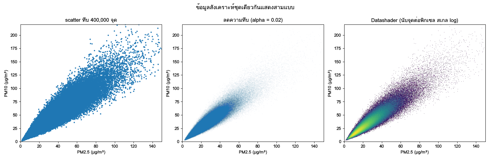

flowchart LR D["data<br/>daily_pm25_clean"] --> M["mapping<br/>x=month, y=pm25_mean"] M --> S["stat<br/>quartiles"] S --> G["geom<br/>box"] G --> SC["scale<br/>linear y"] SC --> C["coord<br/>Cartesian"] C --> F["facet<br/>region"] F --> P["กราฟ"]
12 Grammar of graphics และ visualization เชิงโต้ตอบ
บทที่ 11 อธิบายว่าตาคนอ่านภาพอย่างไร และการเข้ารหัสภาพแบบใดอ่านได้แม่นกว่ากัน บทนี้ต่อจากตรงนั้นสองทาง ทางแรกคือ วิธีคิดเรื่องกราฟอย่างเป็นระบบ ผ่าน grammar of graphics ซึ่งมองกราฟทุกชนิดว่าประกอบจากชิ้นส่วนชุดเดียวกัน เมื่อเข้าใจชิ้นส่วนแล้ว เราจะไม่ต้องจำชื่อกราฟเป็นร้อยแบบ และย้ายความรู้ระหว่างไลบรารีได้ ไม่ว่าจะเป็น seaborn, Altair หรือ Plotly ทางที่สองคือ การโต้ตอบ ซึ่งให้ผู้อ่านเลือกมุมมองเองได้บางส่วน ทั้งการซูม การกรอง และการชี้ดูรายละเอียด
ข้อมูล PM2.5 รายชั่วโมงของประเทศไทยมีหลายล้านแถว มีหลายสิบสถานี และครอบคลุมหลายปี ภาพนิ่งภาพเดียวแสดงทุกมิติพร้อมกันไม่ได้ แต่กราฟเชิงโต้ตอบที่ออกแบบไม่ดีก็ซ่อนข้อค้นพบสำคัญไว้หลังการคลิกได้เช่นกัน บทนี้จึงเน้นทั้ง วิธีสร้าง และ วิธีตัดสินใจ ว่าเมื่อใดควรให้ผู้อ่านโต้ตอบ เมื่อใดควรตัดสินใจแทนผู้อ่าน และจะรับมือกับข้อมูลขนาดใหญ่อย่างไรโดยไม่ทำให้ browser ค้าง ผลงานของบทนี้คือฟังก์ชันสร้างกราฟใน src/charts.py ที่จะนำไปใช้ในแดชบอร์ดของบทที่ 20
วัตถุประสงค์การเรียนรู้
เมื่อจบบทนี้ ผู้อ่านสามารถ
- อธิบายองค์ประกอบของ grammar of graphics และแยกกราฟที่พบบ่อยออกเป็นองค์ประกอบเหล่านั้นได้
- เปรียบเทียบแนวทางของ ggplot2,
seaborn.objects, Altair/Vega-Lite และ Plotly ในแง่ไวยากรณ์ ความสามารถในการโต้ตอบ และข้อจำกัดด้านขนาดข้อมูล - ใช้แบบจำลอง figure, trace และ layout ของ Plotly สร้างและปรับแต่งกราฟเชิงโต้ตอบกับข้อมูล PM2.5
- ออกแบบการโต้ตอบตามหลัก overview first, zoom and filter, details on demand โดยให้สถานะเริ่มต้นของกราฟตอบคำถามหลักได้
- สร้าง linked views และ brushing ด้วย Altair เพื่อสำรวจความสัมพันธ์ข้ามกราฟ
- เลือกกลยุทธ์ที่เหมาะสมสำหรับข้อมูลหลายล้านแถว ได้แก่ การรวมกลุ่มใน DuckDB, binning, การสุ่มตัวอย่าง และ Datashader
- ประเมินการเข้าถึงได้ของกราฟ และข้อจำกัดของเครื่องมือสำรวจแบบลากวาง
12.1 grammar of graphics ของ Wilkinson
ทำไมต้องมีไวยากรณ์ของกราฟ
ลองนึกถึงวิธีเรียนภาษาสองแบบ แบบแรกคือท่องประโยคสำเร็จรูปไว้ใช้ตามสถานการณ์ แบบที่สองคือเรียนไวยากรณ์ คำนาม คำกริยา และวิธีประกอบประโยค แบบแรกเร็วในวันแรกแต่ติดขัดทันทีที่ต้องพูดสิ่งที่ไม่เคยท่อง แบบที่สองช้ากว่าในตอนต้น แต่สร้างประโยคใหม่ได้ไม่จำกัด
ไลบรารีกราฟยุคแรกจำนวนมากทำงานแบบแรก มีฟังก์ชัน bar(), pie(), scatter(), boxplot() แยกกัน แต่ละฟังก์ชันมีพารามิเตอร์ของตัวเอง เมื่อผู้ใช้ต้องการกราฟที่อยู่ระหว่างสองชนิด เช่น จุดที่ซ้อนบนกล่อง แยกช่องตามภาค และแกน y แบบ log ก็ต้องหาทางประกอบเองทีละขั้น
Leland Wilkinson เสนอแนวทางแบบที่สอง ซึ่งเรียกว่า grammar of graphics ในหนังสือ The Grammar of Graphics (Wilkinson 2005) ฉบับแรกพิมพ์ใน พ.ศ. 2542 (ค.ศ. 1999) แนวคิดหลักคือ กราฟทุกภาพเป็นการจับคู่ข้อมูลเข้ากับคุณสมบัติทางภาพผ่านชั้นของการแปลงที่นิยามได้ชัดเจน แนวคิดนี้สืบทอดจากงานของ Jacques Bertin เรื่อง Semiology of Graphics (Bertin 1983) ที่จำแนก “ตัวแปรทางภาพ” (visual variable) เช่น ตำแหน่ง ขนาด ความเข้ม สี รูปทรง และทิศทาง
องค์ประกอบของไวยากรณ์
Wilkinson แบ่งการสร้างกราฟออกเป็นขั้นตอนที่ต่อกันเป็น pipeline ต่อมา Hadley Wickham ปรับเป็น layered grammar of graphics (Wickham 2010) ซึ่งเป็นพื้นฐานของ ggplot2 และไลบรารี Python รุ่นหลัง หนังสือเล่มนี้ใช้ชื่อองค์ประกอบตามแบบของ Wickham เพราะตรงกับไลบรารีที่ใช้จริง
| องค์ประกอบ | คำถามที่ตอบ | ตัวอย่างจาก PM2.5 |
|---|---|---|
| data | วาดจากตารางใด หนึ่งแถวคืออะไร | daily_pm25_clean หนึ่งแถว = หนึ่งสถานีต่อหนึ่งวัน |
| aesthetic mapping | คอลัมน์ใดจับคู่กับช่องทางภาพใด | x = date, y = pm25_mean, color = region |
| statistic (stat) | ต้องคำนวณอะไรก่อนวาด | นับจำนวนใน bin, หาค่ามัธยฐานและควอร์ไทล์ |
| geometry (geom/mark) | ใช้รูปทรงอะไรแทนข้อมูล | จุด เส้น แท่ง กล่อง พื้นที่ |
| scale | แปลงค่าข้อมูลเป็นตำแหน่งหรือสีอย่างไร | แกน y แบบ log, ชุดสี (palette) ของภาค |
| coordinate | วางบนระบบพิกัดใด | Cartesian, polar, พิกัดแผนที่ |
| facet | แบ่งเป็นกราฟย่อยตามตัวแปรใด | หนึ่งช่องต่อหนึ่งภาค |
| position | จัดการรูปทรงที่ทับกันอย่างไร | วางซ้อน (stack), วางข้างกัน (dodge), เขย่า (jitter) |
องค์ประกอบสามอย่างแรกต้องอธิบายเพิ่ม
data ต้องเป็น tidy data (บทที่ 8) คือหนึ่งแถวต่อหนึ่งหน่วยสังเกต หนึ่งคอลัมน์ต่อหนึ่งตัวแปร เพราะการจับคู่ทำที่ระดับคอลัมน์ ถ้าข้อมูลอยู่ในรูปแบบกว้าง เช่น มีคอลัมน์ ภาคเหนือ, ภาคกลาง, ภาคใต้ แยกกัน เราจะจับคู่ “ภาค” กับสีไม่ได้ เพราะภาคไม่ได้เป็นคอลัมน์เดียว ต้องปรับรูป (reshape) ด้วย melt ก่อน ไลบรารีที่ยึดไวยากรณ์นี้จึงทำงานกับรูปแบบยาวได้ดีที่สุด
การจับคู่ตัวแปรกับคุณลักษณะภาพ (aesthetic mapping) คือหัวใจของไวยากรณ์ คำว่า “จับคู่” หมายถึงความสัมพันธ์จาก ค่าข้อมูล ไปยัง ค่าทางภาพ เช่น ภาคเหนือ → สีส้ม ภาคใต้ → สีน้ำเงิน ซึ่งต่างจากการ กำหนดค่าคงที่ เช่น “ทุกเส้นเป็นสีดำ” ความต่างนี้ดูเล็กแต่เป็นต้นเหตุของความสับสนบ่อยที่สุดในทุกไลบรารี ใน ggplot2 การจับคู่อยู่ใน aes() ส่วนค่าคงที่อยู่นอก aes() ใน Altair การจับคู่อยู่ใน encode() ส่วนค่าคงที่อยู่ใน mark_*()
statistic คือการแปลงข้อมูลก่อนวาด กราฟหลายชนิดที่เราเรียกด้วยชื่อเฉพาะจริง ๆ แล้วคือ geom ธรรมดาที่มี stat อยู่ข้างหน้า histogram คือ stat แบบ bin ตามด้วย geom แบบแท่ง box plot คือ stat ที่คำนวณควอร์ไทล์ตามด้วย geom แบบกล่อง เส้นแนวโน้มคือ stat แบบ smooth ตามด้วย geom แบบเส้น เมื่อมองแบบนี้จะเห็นว่าการตัดสินใจทางสถิติ เช่น ความกว้างของ bin หรือวิธี smooth เป็นส่วนหนึ่งของกราฟ ไม่ใช่รายละเอียดที่ซ่อนอยู่ในไลบรารี
แยกกราฟที่คุ้นเคยออกเป็นองค์ประกอบ
แบบฝึกที่ดีที่สุดในการเข้าใจไวยากรณ์คือการแยกกราฟที่เห็นอยู่ทุกวันออกเป็นชิ้นส่วน
กราฟกล่องของ PM2.5 รายเดือนแยกตามภาค ประกอบด้วย data = daily_pm25_clean ที่ join กับ stations, การจับคู่ x = เดือน y = pm25_mean, stat = ควอร์ไทล์และขอบหนวด 1.5 × IQR, geom = กล่อง, scale = แกน y เชิงเส้น, coordinate = Cartesian, facet = ภาค
กราฟวงกลมสัดส่วนสถานีแยกตามภาค เป็นตัวอย่างที่เปิดหูเปิดตาที่สุด Wilkinson แสดงว่ากราฟวงกลมคือ แท่งเดียวที่วางซ้อนกัน (geom = แท่ง, position = stack) บน ระบบพิกัด polar ที่จับคู่ความยาวของแท่งเข้ากับมุม เมื่อรู้แบบนี้ จะเข้าใจทันทีว่าทำไมบทที่ 11 จึงแนะนำให้หลีกเลี่ยงกราฟวงกลม เพราะการเปลี่ยนจาก Cartesian เป็น polar คือการเปลี่ยนการเข้ารหัสจาก ความยาวบนแกนร่วม ซึ่งอ่านได้แม่น ไปเป็น มุม ซึ่งอ่านได้แม่นน้อยกว่าตามลำดับของ Cleveland และ McGill
แผนที่ choropleth ที่จะพบในบทที่ 17 คือ geom แบบ polygon ที่จับคู่ค่าเข้ากับสีเติม บนระบบพิกัดของเส้นโครงแผนที่ ส่วน “แผนที่ฟองอากาศ” ของสถานีคือ geom แบบจุดที่จับคู่ค่าเข้ากับขนาด บนระบบพิกัดเดียวกัน
เปลี่ยนหนึ่งองค์ประกอบ ได้กราฟใหม่
ประโยชน์เชิงปฏิบัติของไวยากรณ์คือ การเปลี่ยนกราฟด้วยการเปลี่ยนองค์ประกอบเดียว สมมุติว่าเรามีตาราง region_daily ที่สรุปมัธยฐาน PM2.5 รายวันของแต่ละภาค
| เปลี่ยน | จาก | เป็น | คำถามที่ตอบได้ใหม่ |
|---|---|---|---|
| geom | เส้น | จุด | วันไหนเป็นค่าสุดขั้วเดี่ยว ๆ |
| stat | ไม่มี | ค่าเฉลี่ยเคลื่อนที่ 7 วัน | แนวโน้มรายสัปดาห์เป็นอย่างไร |
| scale | เชิงเส้น | log | ช่วงฝุ่นน้อยมีความแปรผันหรือไม่ |
| facet | ไม่มี | ภาค | แต่ละภาคมีฤดูกาลเหมือนกันหรือไม่ |
| coordinate | Cartesian | polar (มุม = วันของปี) | รูปแบบซ้ำรายปีชัดหรือไม่ |
ข้อสังเกตคือการเปลี่ยนแต่ละครั้ง เปลี่ยนคำถามที่กราฟตอบ ไวยากรณ์จึงไม่ได้เป็นแค่เครื่องมือเขียนโค้ด แต่เป็นภาษาที่ใช้คิดว่ากราฟกำลังตอบอะไร
ไวยากรณ์ไม่ได้รับประกันว่ากราฟดี
ไวยากรณ์บอกว่ากราฟใด สร้างได้ แต่ไม่ได้บอกว่ากราฟใด ควรสร้าง เหมือนประโยค “ไม้บรรทัดสีเขียวนอนหลับอย่างโกรธเกรี้ยว” ที่ถูกไวยากรณ์แต่ไม่มีความหมาย เราสร้างกราฟวงกลมของอนุกรมเวลา หรือแผนที่ที่ใช้สีรุ้งกับข้อมูลลำดับได้ตามไวยากรณ์ แต่ผู้อ่านจะเข้าใจผิด การเลือกองค์ประกอบที่เหมาะจึงต้องอาศัยหลักการรับรู้ในบทที่ 11 ควบคู่กันเสมอ
12.2 จาก ggplot2 ถึง seaborn objects และ Altair/Vega-Lite
ggplot2: ต้นแบบที่ทุกไลบรารีอ้างถึง
ggplot2 (Wickham 2016) เป็นไลบรารีของภาษา R ที่ทำให้ grammar of graphics แพร่หลาย แม้หนังสือเล่มนี้ใช้ Python แต่การอ่าน ggplot2 ออกช่วยได้มาก เพราะตัวอย่างและหนังสือด้าน visualization จำนวนมากเขียนด้วย ggplot2 และไลบรารี Python รุ่นใหม่ก็ลอกโครงสร้างมาตรง ๆ
# ggplot2 (ภาษา R) แสดงเพื่อเทียบโครงสร้างเท่านั้น
ggplot(region_daily, aes(x = date, y = pm25_median, colour = region)) +
geom_line() +
geom_hline(yintercept = 37.5, linetype = "dashed") +
scale_y_log10() +
facet_wrap(~ region, ncol = 3) +
labs(x = "วันที่", y = "มัธยฐาน PM2.5 (µg/m³)")แต่ละบรรทัดคือหนึ่งองค์ประกอบ เครื่องหมาย + คือการ เพิ่มชั้น (layer) ซึ่งเป็นคำสำคัญของ layered grammar ชั้นหนึ่งประกอบด้วย data, mapping, stat, geom และ position ของตัวเอง ส่วน scale, coordinate และ facet ใช้ร่วมกันทั้งกราฟ
seaborn.objects: ไวยากรณ์บนฐาน matplotlib
seaborn (Waskom 2021) เดิมเป็นไลบรารีแบบฟังก์ชันสำเร็จรูป เช่น sns.boxplot() และ sns.lineplot() ซึ่งยังใช้ได้และสะดวกมาก ตั้งแต่เวอร์ชัน 0.12 seaborn เพิ่ม interface ใหม่ชื่อ seaborn.objects ที่เขียนตามไวยากรณ์โดยตรง
import seaborn.objects as so
(
so.Plot(region_daily, x="date", y="pm25_median", color="region") # data + mapping
.add(so.Line(linewidth=0.8)) # geom
.scale(y="log") # scale
.facet(col="region", wrap=3) # facet
.label(x="วันที่", y="มัธยฐาน PM2.5 (µg/m³)", color="ภาค")
.layout(size=(10, 6))
)ความต่างจากฟังก์ชันเดิมของ seaborn คือ stat แยกออกมาเป็นออบเจกต์ของตัวเอง และส่งเข้าไปใน .add() คู่กับ geom (seaborn เรียก geom ว่า mark)
(
so.Plot(daily, x="month", y="pm25_mean", color="region")
.add(so.Line(), so.Agg("median")) # mark + stat: มัธยฐานของแต่ละเดือน
.add(so.Band(), so.Perc([25, 75])) # แถบควอร์ไทล์ที่ 1–3
.label(x="เดือน", y="PM2.5 (µg/m³)")
)โค้ดนี้วาดสองชั้นบนกราฟเดียว ชั้นแรกคือเส้นมัธยฐาน ชั้นที่สองคือแถบระหว่างเปอร์เซ็นไทล์ที่ 25 และ 75 ซึ่งบอกความแปรผันระหว่างวันและสถานีในเดือนนั้น การวางเส้นกลางคู่กับแถบเป็นวิธีที่ซื่อตรงกว่าการแสดงเส้นค่าเฉลี่ยอย่างเดียว เพราะผู้อ่านเห็นทั้งระดับและการกระจาย
ผลของ seaborn.objects เป็นภาพนิ่งจาก matplotlib จึงต้องตั้งค่าแบบอักษรไทยตามบทที่ 11 (ฟังก์ชัน viz_style.setup()) และบันทึกเป็น PNG ด้วย .save("reports/figures/12_monthly_band.png", dpi=200)
Altair และ Vega-Lite: ไวยากรณ์ที่เป็นข้อมูล
Vega-Lite (Satyanarayan และคณะ 2017) เป็นภาษาบรรยายกราฟในรูปแบบ JSON ที่พัฒนาโดยกลุ่มวิจัยของมหาวิทยาลัยวอชิงตัน จุดเด่นคือ กราฟทั้งภาพเป็นข้อมูล ไม่ใช่โปรแกรม ผู้ใช้บอกว่า ต้องการอะไร (declarative) แล้วให้ตัวแปลภาษาใน browser ตัดสินใจว่า วาดอย่างไร Altair (VanderPlas และคณะ 2018) เป็นไลบรารี Python ที่สร้าง JSON ของ Vega-Lite ให้
import altair as alt
chart = (
alt.Chart(region_daily)
.mark_line(strokeWidth=1)
.encode(
x=alt.X("date:T", title="วันที่"),
y=alt.Y("pm25_median:Q", title="มัธยฐาน PM2.5 (µg/m³)"),
color=alt.Color("region:N", title="ภาค"),
tooltip=["region:N", "date:T", alt.Tooltip("pm25_median:Q", format=".1f")],
)
)
rule = alt.Chart(pd.DataFrame({"y": [37.5]})).mark_rule(strokeDash=[4, 4]).encode(y="y:Q")
(chart + rule).properties(width=700, height=300)อักษรหลังเครื่องหมาย : บอก ชนิดของข้อมูล ซึ่งเป็นสิ่งที่ Vega-Lite ใช้เลือก scale และชุดสีให้อัตโนมัติ
| รหัส | ชนิด | ตัวอย่าง | scale ที่ได้ |
|---|---|---|---|
Q |
quantitative (เชิงปริมาณ) | pm25_median |
ต่อเนื่อง ชุดสีแบบ sequential |
O |
ordinal (มีลำดับ) | เดือน 1–12 | ไม่ต่อเนื่องแต่เรียงลำดับ |
N |
nominal (ไม่มีลำดับ) | ภาค | ไม่ต่อเนื่อง ชุดสีแบบ categorical |
T |
temporal (เวลา) | date |
แกนเวลา |
การระบุชนิดผิดเปลี่ยนความหมายของกราฟได้ เช่น ถ้าใส่เดือนเป็น month:Q แกนจะมีค่า 1.5 หรือ 2.5 ที่ไม่มีความหมาย และถ้าใส่เป็น month:N ลำดับเดือนอาจถูกเรียงตามตัวอักษร ชนิดที่ถูกต้องสำหรับเดือนคือ O
เพราะกราฟเป็นข้อมูล เราจึงดู JSON ที่ Altair สร้างได้ด้วย chart.to_dict() และเห็นองค์ประกอบของไวยากรณ์อยู่ในรูปคีย์ของ dictionary
spec = chart.to_dict()
sorted(k for k in spec if not k.startswith("$"))# ผลลัพธ์ (ตัวอย่าง)
['config', 'data', 'datasets', 'encoding', 'mark']ข้อมูลทั้งหมดถูกฝังลงในคีย์ datasets นี่คือเหตุที่ Altair เตือนด้วย MaxRowsError เมื่อข้อมูลเกิน 5,000 แถว เพราะไฟล์ HTML หรือ notebook จะบวมตามจำนวนแถว ทางแก้ที่ถูกคือ สรุปข้อมูลก่อนส่งเข้า Altair (ดู หัวข้อ 12.6) ไม่ใช่ปิดคำเตือนด้วย alt.data_transformers.disable_max_rows() ซึ่งแค่ซ่อนปัญหา ถ้าจำเป็นต้องใช้ข้อมูลมากจริง Altair 5 รองรับ alt.data_transformers.enable("vegafusion") ที่ย้ายการคำนวณ transform ไปทำใน Python ก่อน แล้วส่งเฉพาะผลลัพธ์ไป browser แต่ต้องติดตั้งแพ็กเกจ vegafusion เพิ่ม ซึ่งไม่อยู่ใน environment.yml ของรายวิชา
การแปลงข้อมูลในไวยากรณ์ (transform)
ทั้ง Vega-Lite และ ggplot2 ทำ stat ได้ภายในกราฟ เช่น alt.Y("median(pm25_mean):Q") หรือ .transform_filter() และ .transform_aggregate() ความสามารถนี้สะดวก แต่ในงานของเราควร ทำการรวมกลุ่มใน DuckDB เป็นหลัก ด้วยเหตุผลสามข้อ ข้อแรก ข้อมูลที่ส่งเข้ากราฟเล็กลงมาก ข้อสอง SQL ตรวจและ review ได้ง่ายกว่า transform ที่ซ่อนอยู่ใน JSON ข้อสาม ตารางสรุปที่ได้ใช้ซ้ำกับกราฟหลายภาพและในแดชบอร์ดได้ transform ภายในกราฟจึงเหมาะกับงานเล็กและงานที่ต้องคำนวณตามการเลือกของผู้ใช้ ซึ่งจะเห็นในหัวข้อ linked views
เปรียบเทียบไลบรารี
seaborn.objects |
Altair | Plotly Express | |
|---|---|---|---|
| ระดับความเป็นไวยากรณ์ | สูง | สูงมาก | ปานกลาง |
| ผลลัพธ์ | ภาพนิ่ง (matplotlib) | Vega-Lite ใน browser | plotly.js ใน browser |
| การโต้ตอบ | ไม่มี | selection และ linked views ในตัว | hover, zoom, legend มากับทุกกราฟ |
| ขนาดข้อมูลที่สบาย | หลักแสนถึงล้าน (เป็นภาพ) | หลักพัน | หลักหมื่นถึงแสน (WebGL) |
| ใช้ในหนังสือ | รายงานภาพนิ่ง | สำรวจแบบ linked views | กราฟเชิงโต้ตอบและแดชบอร์ด |
ไม่มีไลบรารีใดดีที่สุดในทุกงาน หลักที่ใช้ในเล่มคือ ภาพนิ่งสำหรับรายงานใช้ seaborn, กราฟเชิงโต้ตอบใช้ Plotly และใช้ Altair เมื่อต้องการ linked views ที่ทำงานได้ในไฟล์ HTML ไฟล์เดียว สิ่งที่ทำให้สลับไลบรารีได้ง่ายคือข้อมูลที่เตรียมเป็นรูปแบบยาวไว้แล้ว และความเข้าใจว่าทุกไลบรารีพูดภาษาเดียวกันด้วยคำต่างกัน
12.3 แบบจำลองของ Plotly: figure, trace, layout
figure คือต้นไม้ของ JSON
Plotly สำหรับ Python (Plotly Technologies Inc., ม.ป.ป.) เป็นตัวสร้างข้อมูลให้ไลบรารี JavaScript ชื่อ plotly.js ซึ่งเป็นผู้วาดจริงใน browser ทุกกราฟของ Plotly จึงเป็น ออบเจกต์ Figure ที่แปลงเป็น JSON ได้ และมีโครงสร้างสามส่วน
flowchart TD F["Figure"] --> D["data: list ของ trace"] F --> L["layout: แกน ชื่อ legend แบบอักษร annotation shape"] F --> FR["frames: ใช้กับ animation"] D --> T1["trace 1: scatter (ภาคเหนือ)"] D --> T2["trace 2: scatter (ภาคกลาง)"] D --> T3["trace ..."]
trace คือชุดของรูปทรงหนึ่งชุดที่มีชนิดเดียวกัน เช่น เส้นของภาคหนึ่ง แท่งของหนึ่งกลุ่ม หรือ heatmap หนึ่งภาพ trace แต่ละตัวมี type (เช่น scatter, bar, box, heatmap) และข้อมูลของตัวเอง (x, y, z, customdata) layout คือทุกอย่างที่ไม่ได้เป็นข้อมูล ได้แก่ แกน ชื่อกราฟ legend แบบอักษร เส้นอ้างอิง (shape) และข้อความกำกับ (annotation) frames ใช้เก็บสถานะแต่ละเฟรมของ animation
ถ้าเทียบกับ grammar of graphics trace ของ Plotly ใกล้เคียงกับ “ชั้น” ที่ geom ถูกกำหนดไว้แล้ว ส่วน scale และ coordinate กระจายอยู่ใน layout (xaxis.type="log", geo.projection) ข้อต่างสำคัญคือ Plotly ไม่มี stat แบบทั่วไป การคำนวณก่อนวาดมีเฉพาะบาง trace เช่น histogram และ box นอกนั้นผู้ใช้ต้องคำนวณเอง
plotly.express สร้างโครง graph_objects ปรับแต่ง
plotly.express (ย่อว่า px) เป็นชั้นบนที่รับ DataFrame แบบรูปแบบยาวกับชื่อคอลัมน์ แล้วสร้าง Figure ให้ ภายในคือการแบ่งข้อมูลตามคอลัมน์ที่จับคู่กับ color, line_dash, facet_col แล้วสร้างหนึ่ง trace ต่อหนึ่งกลุ่ม ลองดูว่า px สร้างอะไรให้
import duckdb
import plotly.express as px
con = duckdb.connect("data/pm25.duckdb", read_only=True)
region_daily = con.execute("""
SELECT s.region, d.date,
median(d.pm25_mean) AS pm25_median,
max(d.pm25_max) AS pm25_peak,
count(*) AS n_stations
FROM daily_pm25_clean AS d JOIN stations AS s USING (station_id)
WHERE d.is_complete AND d.date < DATE '2024-01-01' -- ช่วงสำรวจ (บทที่ 4)
GROUP BY ALL
ORDER BY s.region, d.date
""").df()
fig = px.line(region_daily, x="date", y="pm25_median", color="region")
[(t.type, t.mode, t.name) for t in fig.data]# ผลลัพธ์ (ตัวอย่าง) จำนวนแถวเท่ากับจำนวนภาคในตาราง stations
[('scatter', 'lines', 'กลาง'), ('scatter', 'lines', 'ตะวันออกเฉียงเหนือ'), ...]ผลลัพธ์บอกสองเรื่อง เรื่องแรก เส้นใน Plotly คือ trace ชนิด scatter ที่มี mode="lines" ไม่มี trace ชนิด “line” แยก เรื่องที่สอง px สร้างหนึ่ง trace ต่อหนึ่งภาค ดังนั้นถ้าจับคู่ color กับคอลัมน์ที่มีหลายร้อยค่า เช่น station_id ก็จะได้หลายร้อย trace ซึ่งทั้งช้าและอ่านไม่ออก
ตัวกรอง WHERE d.is_complete ใช้วันที่มีค่าอย่างน้อย 18 จาก 24 ชั่วโมง (นับรวมชั่วโมงที่เติมช่องว่างสั้น) ตามเกณฑ์ของโครงการ (บทที่ 10) เพราะกราฟนี้จะวางคู่กับเส้นมาตรฐาน 37.5 µg/m³ ซึ่งนิยามบนค่าเฉลี่ย 24 ชั่วโมง ส่วนเงื่อนไข d.date < DATE '2024-01-01' จำกัดการสำรวจไว้ที่ข้อมูลช่วงสำรวจตามข้อตกลงของบทที่ 4 ตัวอย่างอื่นในบทนี้ใช้ตาราง region_daily นี้ หรือใส่เงื่อนไขเดียวกัน
plotly.graph_objects (ย่อว่า go) เป็นชั้นล่างที่สร้าง trace ทีละตัว ใช้เมื่อต้องการ trace ที่ px ไม่มีหรือต้องควบคุมละเอียด แนวทางที่ใช้ในเล่มคือ เริ่มด้วย px แล้วปรับด้วยเมธอดของ Figure
| เมธอด | ใช้ทำอะไร | ตัวอย่าง |
|---|---|---|
update_layout |
แก้ layout | fig.update_layout(font_family="Sarabun", hovermode="x unified") |
update_traces |
แก้ทุก trace หรือเฉพาะที่ตรง selector |
fig.update_traces(line_width=1, selector=dict(type="scatter")) |
update_xaxes / update_yaxes |
แก้แกนทุกช่องของ facet | fig.update_yaxes(type="log") |
add_trace |
เพิ่ม trace จาก go | fig.add_trace(go.Scatter(...)) |
add_hline / add_vrect |
เพิ่มเส้นหรือช่วงอ้างอิง | fig.add_hline(y=37.5, line_dash="dash") |
for_each_annotation |
แก้ข้อความกำกับทีละตัว | ตัดคำว่า region= ออกจากหัว facet |
ชื่อ property แบบเส้นทาง (magic underscore)
layout ของ Plotly เป็นต้นไม้ลึกหลายชั้น เช่น ชื่อแกน x อยู่ที่ layout.xaxis.title.text Plotly ให้เขียนเส้นทางนี้เป็นชื่อพารามิเตอร์เดียวโดยคั่นด้วยขีดล่าง สองบรรทัดนี้จึงมีความหมายเท่ากัน
fig.update_layout(xaxis=dict(title=dict(text="วันที่")))
fig.update_layout(xaxis_title_text="วันที่")ถ้าสะกดเส้นทางผิด Plotly จะแจ้ง error ทันทีพร้อมรายชื่อ property ที่ใช้ได้ ซึ่งดีกว่าการเงียบแล้วไม่ทำอะไร เวลาไม่แน่ใจว่าค่าถูกตั้งไว้ที่ใด ให้ดู fig.layout หรือ fig.to_dict() ตรง ๆ แทนการเดา
hover ที่บอกบริบท: customdata และ hovertemplate
ข้อความ hover เริ่มต้นของ px แสดงชื่อคอลัมน์ภาษาอังกฤษและตัวเลขที่ยาวเกินไป ควรกำหนดเองด้วย hovertemplate ซึ่งเป็นแม่แบบข้อความที่อ้างค่าใน trace ด้วย %{...}
fig = px.line(region_daily, x="date", y="pm25_median", color="region",
custom_data=["n_stations", "pm25_peak"])
fig.update_traces(hovertemplate=(
"%{x|%d/%m/%Y}<br>"
"มัธยฐาน %{y:.1f} µg/m³<br>"
"ค่าสูงสุดรายชั่วโมง %{customdata[1]:.0f} µg/m³<br>"
"จาก %{customdata[0]} สถานี"
"<extra>%{fullData.name}</extra>"
))custom_data ส่งคอลัมน์เพิ่มเติมเข้าไปใน trace โดยไม่วาด แล้วอ้างถึงด้วย customdata[0], customdata[1] ส่วน <extra> คือกล่องเล็กด้านข้างที่ปกติแสดงชื่อ trace การใส่จำนวนสถานีไว้ใน hover สำคัญมาก เพราะมัธยฐานที่มาจาก 2 สถานีน่าเชื่อถือน้อยกว่ามัธยฐานจาก 20 สถานี ผู้อ่านควรรู้ข้อนี้ ณ จุดที่กำลังดูค่า
ข้อควรระวังคือรูปแบบวันที่ %{x|%d/%m/%Y} แสดงปี ค.ศ. เสมอ เพราะ plotly.js ใช้ปฏิทินเกรกอเรียน ในกราฟที่สื่อสารกับสาธารณะ ถ้าต้องการปี พ.ศ. ให้สร้างคอลัมน์ข้อความวันที่แบบไทยไว้ใน DataFrame แล้วส่งผ่าน custom_data แทน
template และแบบอักษรไทย
ค่าตั้งต้นของรูปลักษณ์ทั้งหมดเก็บใน template การตั้ง template กลางครั้งเดียวทำให้ทุกกราฟในโครงการหน้าตาเหมือนกัน แบบเดียวกับ viz_style.setup() ของ matplotlib ในบทที่ 11 จึงควรเก็บโค้ดนี้ไว้ใน src/viz_style.py เป็นฟังก์ชัน setup_plotly() คู่กัน
import plotly.io as pio
import plotly.graph_objects as go
pio.templates["pm25"] = go.layout.Template(layout=dict(
font=dict(family="Sarabun, Tahoma, sans-serif", size=14),
colorway=px.colors.qualitative.Safe, # ชุดสีที่แยกได้สำหรับคนตาบอดสี
hoverlabel=dict(font_family="Sarabun, Tahoma, sans-serif"),
))
pio.templates.default = "simple_white+pm25" # ซ้อน template สองชั้นPlotly แสดงผลใน browser จึงแสดงอักษรไทยได้เองโดยใช้แบบอักษรของเครื่องผู้ดู ต่างจาก matplotlib ที่ต้องหาไฟล์แบบอักษรให้ แต่ถ้าไม่ระบุ font_family หน้าตาจะต่างกันในแต่ละเครื่อง ส่วนการส่งออกเป็นภาพนิ่งด้วย fig.write_image() ซึ่งใช้แพ็กเกจ kaleido ต้องมีแบบอักษรไทยติดตั้งในเครื่องที่รันด้วย มิฉะนั้นจะได้สี่เหลี่ยมแทนตัวอักษร
subplot แทนแกนคู่
บทที่ 11 อธิบายว่าแกน y คู่ (dual axis) ชวนให้เข้าใจผิด เพราะผู้วาดเลือกสเกลของสองแกนได้อิสระจนสร้างความสัมพันธ์ปลอมได้ ทางเลือกที่ดีกว่าคือ subplot ที่ใช้แกน x ร่วมกัน
from plotly.subplots import make_subplots
one = con.execute("""
SELECT date, pm25_mean, n_hours_observed
FROM daily_pm25_clean WHERE station_id = ? ORDER BY date
""", ["35t"]).df()
fig = make_subplots(rows=2, cols=1, shared_xaxes=True, row_heights=[0.7, 0.3],
subplot_titles=["PM2.5 เฉลี่ยรายวัน (µg/m³)", "จำนวนชั่วโมงที่วัดได้จริง"])
fig.add_trace(go.Scatter(x=one["date"], y=one["pm25_mean"], name="PM2.5"), row=1, col=1)
fig.add_trace(go.Bar(x=one["date"], y=one["n_hours_observed"], name="ชั่วโมงที่วัดได้"), row=2, col=1)
fig.add_hline(y=37.5, line_dash="dash", row=1, col=1)
fig.update_layout(showlegend=False)รหัสสถานี 35t เป็นตัวอย่าง ให้เปลี่ยนเป็นสถานีที่มีในฐานข้อมูลของตน กราฟคู่นี้ช่วยตอบคำถามเรื่องคุณภาพข้อมูลที่ภาพเดียวตอบไม่ได้ เช่น วันที่ค่า PM2.5 ดูต่ำผิดปกติเป็นวันที่วัดได้ไม่กี่ชั่วโมงหรือไม่ เมื่อซูมแกน x ด้านบน แกนด้านล่างจะซูมตามเพราะใช้แกนร่วม นี่คือรูปแบบง่ายที่สุดของ linked views
บันทึกและส่งต่อ
| วิธี | คำสั่ง | ข้อดี | ข้อเสีย |
|---|---|---|---|
| HTML ฝัง plotly.js | fig.write_html(path) |
เปิดได้แบบออฟไลน์ | ไฟล์ละหลาย MB |
| HTML ใช้ CDN | fig.write_html(path, include_plotlyjs="cdn") |
ไฟล์เล็ก | ต้องต่ออินเทอร์เน็ต |
| JSON | fig.write_json(path) |
เก็บสถานะกราฟ เปิดใหม่ได้ | ต้องใช้ Plotly เปิด |
| ภาพนิ่ง | fig.write_image(path) |
ใส่ในรายงาน PDF ได้ | ต้องมี kaleido และแบบอักษร |
ไฟล์ HTML ที่ใหญ่ผิดปกติเป็นสัญญาณว่าเราส่งข้อมูลดิบเข้ากราฟ ให้กลับไปสรุปข้อมูลก่อน (ดู หัวข้อ 12.6)
ฟังก์ชันสร้างกราฟที่ใช้ซ้ำได้
ในแดชบอร์ดของบทที่ 20 กราฟเดียวกันถูกสร้างใหม่ทุกครั้งที่ผู้ใช้เปลี่ยนตัวเลือก จึงควรเขียนเป็น ฟังก์ชันที่รับ DataFrame ที่สรุปแล้วและคืน Figure โดยไม่ query ฐานข้อมูลเอง การแยกแบบนี้ทำให้ทดสอบฟังก์ชันกราฟได้ด้วย DataFrame เล็ก ๆ และทำให้ใส่ caching ที่ชั้น query ได้ในบทที่ 20
# src/charts.py
import plotly.express as px
THAI_STD = 37.5
LABELS = {"pm25_median": "มัธยฐาน PM2.5 (µg/m³)", "date": "วันที่", "region": "ภาค",
"n_stations": "จำนวนสถานี", "month": "เดือน"}
def region_timeseries(df):
"""df: region, date, pm25_median, n_stations"""
fig = px.line(df, x="date", y="pm25_median", color="region", labels=LABELS,
custom_data=["n_stations"])
fig.update_traces(hovertemplate="%{x|%d/%m/%Y}<br>%{y:.1f} µg/m³"
"<br>%{customdata[0]} สถานี<extra>%{fullData.name}</extra>")
fig.add_hline(y=THAI_STD, line_dash="dash", line_color="black",
annotation_text="มาตรฐานไทย 37.5", annotation_position="top left")
fig.update_xaxes(rangeslider_visible=True)
fig.update_layout(legend_title_text="")
return fig12.4 หลักการโต้ตอบ: overview first, zoom and filter, details on demand (Shneiderman)
mantra ของ Shneiderman
Ben Shneiderman สรุปประสบการณ์การออกแบบระบบ visualization ไว้ใน พ.ศ. 2539 (ค.ศ. 1996) เป็นประโยคที่ภายหลังเรียกว่า visual information-seeking mantra (Shneiderman 1996)
overview first, zoom and filter, then details on demand
ประโยคนี้บอกลำดับของงานที่ผู้ใช้ทำเมื่อสำรวจข้อมูล เริ่มจากเห็นภาพรวมทั้งหมดก่อน จากนั้นซูมเข้าหาส่วนที่สนใจและกรองส่วนที่ไม่เกี่ยวข้องออก แล้วจึงขอดูรายละเอียดของรายการที่เลือก บทความเดียวกันระบุงานเพิ่มอีกสามอย่าง คือ relate (ดูความสัมพันธ์ระหว่างรายการ), history (ย้อนกลับขั้นที่ทำมา) และ extract (ดึงข้อมูลส่วนที่เลือกออกไปใช้) รวมเป็นเจ็ดงาน
| งาน | ความหมาย | ตัวอย่างกับ PM2.5 | กลไกใน Plotly/Altair |
|---|---|---|---|
| overview | เห็นทั้งชุดข้อมูล | heatmap ภาค × วัน ทุกปี | สถานะเริ่มต้นของกราฟ |
| zoom | ขยายบริเวณที่สนใจ | ซูมไปฤดูแล้งปีเดียว | ลากเลือกช่วง, range slider |
| filter | ตัดรายการที่ไม่เกี่ยว | ดูเฉพาะภาคเหนือ | คลิก legend, dropdown |
| details on demand | ดูค่าของรายการ | ชื่อสถานี ค่า และจำนวนชั่วโมง | hover, tooltip |
| relate | ดูความสัมพันธ์ | วันที่ฝุ่นสูงในภาคเหนือ ภาคอื่นเป็นอย่างไร | linked views (หัวข้อ 12.5) |
| history | ย้อนขั้นตอน | กลับไปมุมมองก่อนซูม | ดับเบิลคลิกเพื่อรีเซ็ต |
| extract | ดึงข้อมูลออก | ส่งออกช่วงวันที่เลือก | ปุ่มดาวน์โหลดในแดชบอร์ด |
Shneiderman ยังจำแนก ชนิดข้อมูล ไว้เจ็ดแบบ ได้แก่ หนึ่งมิติ สองมิติ สามมิติ เวลา หลายมิติ ต้นไม้ และเครือข่าย ข้อมูล PM2.5 เกี่ยวข้องกับเกือบทุกชนิด เป็นข้อมูลเวลา (อนุกรมรายชั่วโมง) ข้อมูลสองมิติ (พิกัดสถานี บทที่ 17) ข้อมูลหลายมิติ (สารมลพิษหกชนิด บทที่ 15) และข้อมูลต้นไม้ (ภาค → จังหวัด → สถานี บทที่ 18) แต่ละชนิดมีวิธี overview ที่เหมาะต่างกัน
อนุกรมงานที่ละเอียดขึ้น
งานรุ่นหลังขยาย mantra ให้ละเอียดขึ้น Yi และคณะ (Yi และคณะ 2007) สรุป เจตนา ของการโต้ตอบเป็นเจ็ดแบบ ได้แก่ select (ทำเครื่องหมายสิ่งที่สนใจ), explore (ดูส่วนอื่น), reconfigure (จัดเรียงใหม่), encode (เปลี่ยนการเข้ารหัส), abstract/elaborate (ดูภาพรวมหรือรายละเอียด), filter (กรองตามเงื่อนไข) และ connect (ดูรายการที่เกี่ยวข้อง) ส่วน Heer และ Shneiderman (Heer และ Shneiderman 2012) จัดงานเป็นสามกลุ่ม คือ การกำหนดข้อมูลและมุมมอง (visualize, filter, sort, derive) การจัดการมุมมอง (select, navigate, coordinate, organize) และกระบวนการกับที่มา (record, annotate, share, guide)
อนุกรมเหล่านี้มีประโยชน์ในการออกแบบ เพราะให้ถามได้อย่างเป็นระบบว่า “ผู้ใช้ต้องทำงานอะไร และกราฟนี้รองรับงานนั้นหรือยัง” แทนการเพิ่มปุ่มเพราะทำได้
สถานะเริ่มต้นต้องตอบคำถามหลักได้
หลักที่สำคัญที่สุดของบทนี้คือ สถานะเริ่มต้นของกราฟ ก่อนที่ผู้ใช้จะแตะอะไร ต้องตอบคำถามหลักได้แล้ว การโต้ตอบเป็นทางเลือกสำหรับการเจาะลึก ไม่ใช่ที่ซ่อนคำตอบ เหตุผลมีสามข้อ
- ผู้อ่านส่วนใหญ่ไม่โต้ตอบ ผู้อ่านรายงานหรือผู้บริหารที่เปิดแดชบอร์ดจำนวนมากดูเพียงภาพแรกแล้วปิด ถ้าข้อค้นพบอยู่หลัง hover ผู้อ่านกลุ่มนี้จะไม่เห็นเลย
- ภาพแรกเป็นกรอบการตีความ สิ่งที่เห็นก่อนกำหนดว่าผู้อ่านจะมองหาอะไรต่อ ถ้าภาพแรกซูมอยู่ที่ช่วงที่ไม่สำคัญ ผู้อ่านจะเข้าใจผิดตั้งแต่ต้น
- การโต้ตอบมีต้นทุน ทุกการคลิกใช้เวลาและความจำ ผู้ใช้ต้องจำว่าเห็นอะไรก่อนกรอง และต้องรู้ว่ามีตัวเลือกให้กด
ตารางต่อไปนี้สรุปว่าการโต้ตอบแต่ละแบบช่วยอะไรและซ่อนอะไรได้บ้าง
| การโต้ตอบ | ช่วย | ซ่อนหรือเสี่ยง |
|---|---|---|
| hover | ดูค่าจริงโดยไม่ต้องใส่ป้ายทุกจุด | ข้อค้นพบหลักถูกซ่อน ถ้าผู้อ่านไม่ชี้เมาส์ก็ไม่เห็น และใช้บนจอสัมผัสไม่สะดวก |
| zoom / range slider | ดูเหตุการณ์สั้นในอนุกรมหลายปี | ผู้อ่านซูมช่วงเดียวแล้วสรุปเกินจริง |
| คลิก legend เพื่อซ่อนกลุ่ม | ลดความรกเมื่อมีหลายกลุ่ม | ภาพที่ถูกซ่อนบางกลุ่มอาจถูกบันทึกหน้าจอไปใช้โดยไม่รู้ว่าขาดอะไร |
| dropdown | สลับมุมมองโดยไม่ต้องมีหลายกราฟ | ตัวเลือกเริ่มต้นมีผลต่อการตีความมาก |
| animation | เห็นการเปลี่ยนแปลงตามเวลา | ความจำภาพก่อนหน้าไม่แม่น เทียบข้ามเฟรมยาก |
ตัวอย่าง: overview ด้วย heatmap แล้วซูมด้วย range selector
คำถาม “ฤดูไหนและภาคไหน PM2.5 สูง” ตอบได้ดีด้วย heatmap ที่แกน x เป็นสัปดาห์ แกน y เป็นภาค และสีเป็นมัธยฐาน เพราะภาพเดียวแสดงทุกปีและทุกภาค ผู้อ่านเห็นแถบสีเข้มที่ซ้ำทุกปีได้ทันทีโดยไม่ต้องโต้ตอบ
weekly = con.execute("""
SELECT s.region, date_trunc('week', d.date) AS week,
median(d.pm25_mean) AS pm25_median
FROM daily_pm25_clean AS d JOIN stations AS s USING (station_id)
WHERE d.is_complete AND d.date < DATE '2024-01-01'
GROUP BY ALL ORDER BY week
""").df()
grid = weekly.pivot(index="region", columns="week", values="pm25_median")
fig = px.imshow(grid, aspect="auto", color_continuous_scale="Viridis",
labels={"x": "สัปดาห์", "y": "ภาค", "color": "มัธยฐาน µg/m³"})pivot เปลี่ยนตารางรูปแบบยาวเป็นตารางกริดภาค × สัปดาห์ ช่องที่ไม่มีข้อมูลจะเป็น NaN และ px.imshow แสดงเป็นช่องว่าง ซึ่งดีกว่าการเติมค่าเพราะผู้อ่านเห็นช่วงที่ข้อมูลขาด ชุดสี Viridis เป็นชุดสีแบบ sequential ที่ perceptually uniform และอ่านได้เมื่อพิมพ์ขาวดำ (บทที่ 11) เหมาะกับค่าที่มีทิศทางเดียว เช่น ความเข้มข้นของฝุ่น
เมื่อผู้อ่านเห็นภาพรวมแล้ว กราฟเส้นที่มีปุ่มเลือกช่วงเวลาช่วยให้ซูมไปยังช่วงที่สนใจได้เร็วกว่าการลาก
fig = region_timeseries(region_daily) # ฟังก์ชันจาก src/charts.py
fig.update_xaxes(rangeselector=dict(buttons=[
dict(count=1, label="1 เดือน", step="month", stepmode="backward"),
dict(count=6, label="6 เดือน", step="month", stepmode="backward"),
dict(count=1, label="1 ปี", step="year", stepmode="backward"),
dict(step="all", label="ทั้งหมด"),
]))
fig.update_layout(hovermode="x unified") # hover หนึ่งครั้งเห็นทุกภาคในวันเดียวกันhovermode="x unified" รวมค่าของทุก trace ในวันเดียวกันไว้ในกล่องเดียว ซึ่งตรงกับงาน relate ที่ต้องการเทียบภาคต่าง ๆ ณ เวลาเดียวกัน
กรองด้วย dropdown
updatemenus ของ Plotly สร้าง dropdown ที่เปลี่ยน property ของกราฟได้โดยไม่ต้องมี server เหมาะกับกราฟในไฟล์ HTML ที่ส่งต่อทางอีเมล
regions = [t.name for t in fig.data]
buttons = [dict(label="ทุกภาค", method="update",
args=[{"visible": [True] * len(regions)}])]
for i, r in enumerate(regions):
visible = [j == i for j in range(len(regions))]
buttons.append(dict(label=r, method="update", args=[{"visible": visible}]))
fig.update_layout(updatemenus=[dict(buttons=buttons, direction="down",
x=1.0, xanchor="right", y=1.15, yanchor="top")])ตัวเลือกแรกคือ “ทุกภาค” เพื่อให้สถานะเริ่มต้นเป็น overview ตามหลักข้างต้น ข้อจำกัดของ updatemenus คือทำได้เพียงเปลี่ยน property ของ trace ที่มีอยู่แล้ว ไม่ได้ query ข้อมูลใหม่ ถ้าตัวเลือกต้องเปลี่ยนข้อมูลจริง เช่น เลือกสถานีจากหลายสิบสถานี ควรใช้ widget ของแดชบอร์ดในบทที่ 20
animation: ใช้อย่างระวัง
animation ดึงดูดสายตาแต่เป็นการโต้ตอบที่วิเคราะห์ยากที่สุด งานศึกษาของ Robertson และคณะ (Robertson และคณะ 2008) เปรียบเทียบ animation กับ small multiples และ trace ของเส้นทาง พบว่าผู้ใช้ชอบ animation และรู้สึกสนุก แต่ทำงานวิเคราะห์ได้แม่นและเร็วกว่าเมื่อใช้ small multiples ดังนั้นถ้าใช้ animation ต้องทำสามอย่าง คือ ล็อกแกนให้เท่ากันทุกเฟรม (range_y) เรียงเฟรมตามลำดับที่มีความหมาย และวางภาพนิ่งหรือ facet ที่ตอบคำถามเดียวกันไว้คู่กัน
monthly = con.execute("""
SELECT s.region, month(d.date) AS month, median(d.pm25_mean) AS pm25_median
FROM daily_pm25_clean AS d JOIN stations AS s USING (station_id)
WHERE d.is_complete AND d.date < DATE '2024-01-01'
GROUP BY ALL ORDER BY month, s.region
""").df()
fig = px.bar(monthly, x="region", y="pm25_median", animation_frame="month",
range_y=[0, monthly["pm25_median"].max() * 1.1],
labels={"region": "ภาค", "pm25_median": "มัธยฐาน PM2.5 (µg/m³)", "month": "เดือน"})
fig.add_hline(y=37.5, line_dash="dash")12.5 linked views และ brushing
ความคิดเบื้องหลัง
กราฟภาพเดียวแสดงได้เพียงสองหรือสามมิติ แต่คำถามจริงมักเกี่ยวกับหลายมิติพร้อมกัน เช่น “วันที่ PM2.5 สูงในภาคเหนือ เป็นวันที่ PM10 และ CO สูงด้วยหรือไม่ และเกิดในเดือนใด” linked views (หรือ coordinated multiple views) แก้ปัญหานี้ด้วยการวางกราฟหลายภาพที่แสดงข้อมูลชุดเดียวกันจากคนละมุม แล้วเชื่อมกันด้วยการเลือก เมื่อผู้ใช้เลือกรายการในกราฟหนึ่ง รายการเดียวกันจะถูกเน้นหรือกรองในกราฟอื่นทุกภาพ (Roberts 2007)
brushing คือการลากกรอบเลือกบริเวณในกราฟหนึ่ง แนวคิดนี้มาจากงานของ Becker และ Cleveland (Becker และ Cleveland 1987) เรื่อง brushing scatterplots ซึ่งให้ผู้ใช้ลาก “แปรง” สี่เหลี่ยมไปบน scatterplot matrix แล้วจุดที่อยู่ในแปรงจะเปลี่ยนสีในทุกช่องของ matrix ทำให้เห็นว่ากลุ่มจุดในคู่ตัวแปรหนึ่งอยู่ตรงไหนในคู่ตัวแปรอื่น
flowchart LR B["กราฟ A: ผู้ใช้ลากเลือก<br/>(brush)"] -->|"เงื่อนไขการเลือก<br/>เช่น date อยู่ในช่วง"| SEL["selection"] SEL -->|"เน้นสี"| V1["กราฟ A: จุดในช่วงสีเข้ม"] SEL -->|"กรอง"| V2["กราฟ B: สรุปเฉพาะช่วงที่เลือก"] SEL -->|"กรอง"| V3["กราฟ C: การแจกแจงเฉพาะช่วงที่เลือก"]
การเชื่อมมีสองแบบหลัก คือ highlight (แสดงทุกรายการแต่เน้นรายการที่เลือก) และ filter (แสดงเฉพาะรายการที่เลือก) แบบ highlight รักษาบริบท ผู้ใช้ยังเห็นว่าส่วนที่เลือกเทียบกับทั้งหมดเป็นอย่างไร แบบ filter เหมาะเมื่อกราฟปลายทางเป็นสรุป เช่น ค่าเฉลี่ยของช่วงที่เลือก
linked views ใน Altair
Altair ทำ linked views ได้ในไฟล์ HTML ไฟล์เดียวโดยไม่ต้องมี server เพราะ Vega-Lite มีแนวคิด selection parameter อยู่ในภาษา การเลือกถูกนิยามเป็นข้อมูลชิ้นหนึ่งของกราฟ แล้วกราฟอื่นอ้างถึงได้
ตัวอย่างต่อไปนี้เตรียมข้อมูลรายวันระดับภาคที่มีทั้ง PM2.5 และ PM10 แล้วสร้างกราฟสองภาพ ภาพบนคือเส้นเวลาที่ลากเลือกช่วงวันที่ได้ ภาพล่างคือ scatter ระหว่าง PM10 กับ PM2.5 ที่เน้นเฉพาะวันในช่วงที่เลือก
pair = con.execute("""
SELECT s.region, CAST(m.ts AS DATE) AS date,
avg(m.pm25) AS pm25, avg(m.pm10) AS pm10
FROM measurements_clean AS m JOIN stations AS s USING (station_id)
WHERE m.pm25 IS NOT NULL AND m.pm10 IS NOT NULL AND s.region = ?
GROUP BY ALL ORDER BY date
""", ["เหนือ"]).df() # ค่าใน stations.region ตรวจด้วย SELECT DISTINCT region
len(pair) # หนึ่งแถวต่อวัน จึงอยู่ในหลักพัน ต่ำกว่าขีด 5,000 แถวของ Altairbrush = alt.selection_interval(encodings=["x"]) # ลากเลือกตามแกน x เท่านั้น
timeline = alt.Chart(pair).mark_line(strokeWidth=1).encode(
x=alt.X("date:T", title="วันที่"),
y=alt.Y("pm25:Q", title="PM2.5 (µg/m³)"),
).add_params(brush).properties(width=700, height=180)
scatter = alt.Chart(pair).mark_circle(size=20).encode(
x=alt.X("pm10:Q", title="PM10 (µg/m³)"),
y=alt.Y("pm25:Q", title="PM2.5 (µg/m³)"),
color=alt.condition(brush, alt.value("#d95f02"), alt.value("lightgray")),
opacity=alt.condition(brush, alt.value(0.9), alt.value(0.3)),
).properties(width=340, height=300)
(timeline & scatter).save("reports/12_linked_pm25_pm10.html")องค์ประกอบสำคัญมีสามส่วน alt.selection_interval สร้างการเลือกแบบช่วง add_params(brush) ผูกการเลือกเข้ากับกราฟที่ผู้ใช้ลาก และ alt.condition(brush, ค่าเมื่ออยู่ในช่วง, ค่าเมื่อไม่อยู่) ทำให้กราฟอื่นตอบสนอง ตัวดำเนินการ & วางกราฟซ้อนแนวตั้ง | วางแนวนอน และ + ซ้อนชั้นบนแกนเดียวกัน
การใช้สีเทาอ่อนกับจุดที่ไม่ถูกเลือกเป็นแบบ highlight ผู้ใช้จึงเห็นว่าวันในฤดูแล้งที่เลือกอยู่ตรงไหนของกลุ่มจุดทั้งหมด เช่น อัตราส่วน PM2.5 ต่อ PM10 ของช่วงนั้นสูงหรือต่ำกว่าช่วงอื่น ข้อสังเกตแบบนี้เป็นจุดเริ่มของสมมติฐานเรื่องแหล่งกำเนิดฝุ่น ซึ่งต้องทดสอบต่อด้วยวิธีในบทที่ 13 ไม่ใช่ข้อสรุป
การเลือกแบบจุดและการผูกกับ legend
นอกจากการลากช่วง Vega-Lite มีการเลือกแบบจุด (alt.selection_point) ที่ใช้คลิกเลือกรายการ และผูกกับ legend ได้
pick = alt.selection_point(fields=["region"], bind="legend")
lines = alt.Chart(region_daily).mark_line(strokeWidth=1).encode(
x="date:T", y=alt.Y("pm25_median:Q", title="มัธยฐาน PM2.5 (µg/m³)"),
color=alt.Color("region:N", title="ภาค"),
opacity=alt.condition(pick, alt.value(1), alt.value(0.1)),
).add_params(pick)ต่างจากการคลิก legend ของ Plotly ซึ่ง ซ่อน เส้น การเลือกนี้ จาง เส้นอื่นแทน ผู้อ่านจึงยังเห็นบริบท ซึ่งตรงกับข้อเสนอให้ใช้ highlight มากกว่า filter เมื่อต้องการเทียบ
linked views ใน Plotly และในแดชบอร์ด
Plotly ใน HTML แบบเดี่ยวทำ linked views ข้ามกราฟได้จำกัด subplot ที่ใช้แกนร่วม (shared_xaxes=True) ซูมพร้อมกันได้ แต่การเลือกจุดในกราฟหนึ่งแล้วกรองอีกกราฟต้องมีโค้ดที่ตอบสนองต่อเหตุการณ์ (callback) ซึ่งทำได้สามทาง
- Dash เฟรมเวิร์กของบริษัท Plotly ที่ให้เขียน callback ด้วย Python
FigureWidgetใน Jupyter ที่ผูกฟังก์ชันกับเหตุการณ์on_selectionได้ ใช้สำรวจใน notebook เท่านั้น- Streamlit ซึ่งตั้งแต่เวอร์ชัน 1.35 ให้
st.plotly_chart(fig, on_select="rerun")คืนข้อมูลจุดที่ผู้ใช้เลือก แล้วนำไปกรองกราฟอื่นในการ rerun ครั้งถัดไป (บทที่ 20)
import streamlit as st
event = st.plotly_chart(fig, on_select="rerun", selection_mode="box", key="timeline")
picked = event.selection.points # list ของจุดที่ถูกเลือก แต่ละจุดมี x, y, curve_numberทางเลือกนี้สำคัญต่อการออกแบบ ถ้าผลงานเป็นไฟล์ HTML ที่ส่งต่อได้ Altair ทำ linked views ได้โดยไม่ต้องมี server ถ้าผลงานเป็นแดชบอร์ดที่มี server อยู่แล้ว Plotly ร่วมกับ Streamlit ยืดหยุ่นกว่าเพราะ query ข้อมูลใหม่ตามการเลือกได้
ข้อควรระวังของ linked views
linked views ทรงพลังสำหรับการสำรวจ แต่เปิดโอกาสให้เกิด garden of forking paths (บทที่ 4) ได้ง่ายมาก ผู้ใช้ลากเลือกช่วงไปเรื่อย ๆ จนพบช่วงที่ความสัมพันธ์ “ดูแรง” แล้วรายงานเฉพาะช่วงนั้น ข้อสังเกตที่ได้จากการลากเลือกจึงเป็น สมมติฐาน ที่ต้องบันทึกไว้ใน questions.md พร้อมช่วงที่เลือก และทดสอบกับข้อมูลยืนยันที่แยกไว้ (บทที่ 4) ก่อนนำไปสรุป
12.6 visualization ข้อมูลขนาดใหญ่: binning, aggregation และ Datashader
ขนาดของปัญหา
ประมาณขนาดตาราง measurements คร่าว ๆ จากจำนวนสถานีและจำนวนปี
สถานี 80 แห่ง × 24 ชั่วโมง × 365 วัน × 6 ปี ≈ 4,204,800 แถวตัวเลขนี้เป็นการประมาณเพื่อให้เห็นลำดับขนาด ให้ตรวจจำนวนจริงของฐานข้อมูลตนด้วย SELECT count(*) FROM measurements ปัญหาที่เกิดเมื่อวาดข้อมูลขนาดนี้ตรง ๆ มีสองชั้น
ชั้นเทคนิค Plotly และ Altair ฝังข้อมูลทุกจุดลงใน JSON ที่ส่งไปให้ browser จุดละหลายสิบไบต์ คูณหลายล้านจุดได้ไฟล์หลายร้อย MB ที่ browser วาดไม่ไหว
ชั้นการรับรู้ จอภาพกว้างประมาณ 1,000–2,000 pixel ถ้าวาดอนุกรมเวลาสี่ล้านจุดบนแกน x กว้าง 1,000 pixel จะมีจุดเฉลี่ยราว 4,200 จุดต่อหนึ่งคอลัมน์ pixel ตาคนแยกไม่ได้อยู่แล้ว ผลที่เห็นคือ overplotting จุดทับกันจนกลายเป็นก้อนสีทึบที่ซ่อนความหนาแน่นที่แท้จริง บริเวณที่มีจุดหนึ่งพันจุดกับบริเวณที่มีหนึ่งล้านจุดดูเหมือนกัน
ข้อสรุปคือ ปัญหาข้อมูลใหญ่ใน visualization เป็นปัญหาของการลดข้อมูลให้เหลือเท่าที่ตาและจอรับได้ ไม่ใช่ปัญหาของการวาดให้เร็วขึ้นเท่านั้น งานของ Liu และคณะ (Liu และคณะ 2013) สรุปแนวทางลดข้อมูลไว้สี่แบบ คือ การกรอง การสุ่มตัวอย่าง การรวมกลุ่ม (binning) และการจำลองแบบ (model) ซึ่งตรงกับกลยุทธ์ในตารางต่อไปนี้
| กลยุทธ์ | ทำที่ไหน | ใช้เมื่อ | ข้อควรระวัง |
|---|---|---|---|
| รวมกลุ่มก่อน | DuckDB (GROUP BY, time_bucket) |
แทบทุกกรณี | ค่าเฉลี่ยซ่อนค่าสุดขั้ว เก็บ max หรือเปอร์เซ็นไทล์ไว้ด้วย |
| binning สองมิติ | DuckDB หรือ px.density_heatmap |
ความสัมพันธ์ของสองตัวแปรต่อเนื่อง | ความกว้างของ bin เปลี่ยนภาพ |
| สุ่มตัวอย่าง | DuckDB USING SAMPLE |
ดูรูปร่างความสัมพันธ์ | ค่าหายากหลุด ต้องกำหนด seed |
| WebGL | render_mode="webgl", go.Scattergl |
หลักหมื่นถึงแสนจุด | ยังส่งข้อมูลทั้งหมดไป browser |
| Datashader | Python ก่อนส่งไป browser | หลักล้านจุดขึ้นไป | ได้ภาพ raster ไม่มี hover รายจุด |
aggregation: ให้ฐานข้อมูลทำงานหนัก
หลักแรกคือ สรุปใน DuckDB แล้วส่งผลสรุปไปวาด DuckDB ประมวลผลแบบ columnar และ vectorized (บทที่ 6) จึงสรุปหลายล้านแถวได้ในเวลาไม่ถึงวินาทีบนเครื่องทั่วไป ในขณะที่การดึงหลายล้านแถวเข้า pandas แล้วส่งต่อให้ Plotly ใช้ทั้งหน่วยความจำและเวลามากกว่าหลายเท่า
ตัวอย่างคือรูปแบบรายชั่วโมงของวันแยกตามเดือน ซึ่งลดหลายล้านแถวลงเหลือไม่เกิน 12 × 24 = 288 แถวต่อภาค
hour_month = con.execute("""
SELECT month(m.ts) AS month, hour(m.ts) AS hour,
median(m.pm25) AS pm25_median,
quantile_cont(m.pm25, 0.9) AS pm25_p90,
count(*) AS n
FROM measurements_clean AS m JOIN stations AS s USING (station_id)
WHERE m.pm25 IS NOT NULL AND s.region = ?
GROUP BY ALL ORDER BY month, hour
""", ["เหนือ"]).df()
pivot = hour_month.pivot(index="month", columns="hour", values="pm25_median")
px.imshow(pivot, aspect="auto", color_continuous_scale="Viridis",
labels={"x": "ชั่วโมง", "y": "เดือน", "color": "µg/m³"})การเก็บ pm25_p90 และ n ไว้ด้วยเป็นนิสัยที่ดี มัธยฐานบอกระดับทั่วไป เปอร์เซ็นไทล์ที่ 90 บอกว่าชั่วโมงที่แย่เป็นอย่างไร และ n บอกว่าแต่ละช่องมาจากข้อมูลมากน้อยแค่ไหน การสรุปที่เก็บเพียงค่าเฉลี่ยค่าเดียวทำให้ข้อมูลสำคัญหายไปเงียบ ๆ
aggregation สำหรับอนุกรมเวลา: อย่าทิ้งยอด
เมื่อลดอนุกรมรายชั่วโมงเป็นรายวันด้วยค่าเฉลี่ย ยอดแหลมช่วงสั้น ๆ จะหายไป สำหรับ PM2.5 ยอดแหลมเหล่านี้คือสิ่งที่ผู้อ่านอาจสนใจที่สุด เช่น ชั่วโมงที่ไฟไหม้ใกล้สถานี Jugel และคณะ (Jugel และคณะ 2014) เสนอวิธี M4 aggregation ที่เก็บค่าสี่ค่าต่อหนึ่งช่วงเวลา คือ ค่าแรก ค่าสุดท้าย ค่าต่ำสุด และค่าสูงสุด และพิสูจน์ว่าถ้าแต่ละช่วงกว้างหนึ่ง pixel เส้นที่วาดจากสี่ค่านี้จะเหมือนเส้นที่วาดจากข้อมูลทั้งหมดทุก pixel
m4 = con.execute("""
SELECT time_bucket(INTERVAL '6 hours', ts) AS bucket,
min(pm25) AS pm25_min,
max(pm25) AS pm25_max,
arg_min(pm25, ts) AS pm25_first,
arg_max(pm25, ts) AS pm25_last
FROM measurements_clean
WHERE station_id = ? AND pm25 IS NOT NULL
GROUP BY bucket ORDER BY bucket
""", ["35t"]).df()time_bucket ของ DuckDB ตัดเวลาเป็นช่วงที่กว้างเท่ากัน ส่วน arg_min(pm25, ts) คืนค่า pm25 ณ แถวที่ ts น้อยที่สุดในกลุ่ม ซึ่งก็คือค่าแรกของช่วง ช่วง 6 ชั่วโมงในตัวอย่างลดข้อมูลหนึ่งสถานีหกปีจากราว 52,560 แถวเหลือราว 8,760 ช่วง ความกว้างของช่วงที่เหมาะขึ้นกับความกว้างของกราฟและช่วงเวลาที่แสดง
วิธีวาดแบบง่ายที่รักษายอดไว้คือวาดแถบระหว่าง pm25_min และ pm25_max แล้ววาดเส้นค่าแรกทับ
fig = go.Figure([
go.Scatter(x=m4["bucket"], y=m4["pm25_max"], line_width=0, showlegend=False,
hoverinfo="skip"),
go.Scatter(x=m4["bucket"], y=m4["pm25_min"], fill="tonexty", line_width=0,
fillcolor="rgba(31,119,180,0.3)", name="ช่วงต่ำสุด–สูงสุด"),
go.Scatter(x=m4["bucket"], y=m4["pm25_first"], line_width=0.8, name="ค่าแรกของช่วง"),
])
fig.add_hline(y=37.5, line_dash="dash")
fig.update_layout(yaxis_title="PM2.5 รายชั่วโมง (µg/m³)")ข้อควรสังเกตคือเส้น 37.5 µg/m³ เป็นมาตรฐานของค่าเฉลี่ย 24 ชั่วโมง ไม่ใช่ค่ารายชั่วโมง ในกราฟรายชั่วโมงจึงใช้เส้นนี้เป็นเพียงจุดอ้างอิงทางสายตา และต้องเขียนกำกับให้ชัดว่าค่ารายชั่วโมงที่เกินเส้นไม่ได้แปลว่าวันนั้นเกินมาตรฐาน
binning สองมิติ
ความสัมพันธ์ระหว่าง PM10 และ PM2.5 รายชั่วโมงทั้งหมดเป็นตัวอย่างคลาสสิกของ overplotting การ bin สองมิติแบ่งระนาบเป็นช่องสี่เหลี่ยม นับจำนวนจุดในแต่ละช่อง แล้วจับคู่จำนวนกับสี ผลคือ histogram สองมิติที่แสดงความหนาแน่นได้ตรงกว่า scatter
bins = con.execute("""
SELECT floor(pm10 / 5) * 5 AS pm10_bin,
floor(pm25 / 5) * 5 AS pm25_bin,
count(*) AS n
FROM measurements_clean
WHERE pm25 IS NOT NULL AND pm10 IS NOT NULL
AND pm25 < 300 AND pm10 < 400
GROUP BY ALL
""").df()
fig = px.density_heatmap(bins, x="pm10_bin", y="pm25_bin", z="n", histfunc="sum",
nbinsx=80, nbinsy=60, color_continuous_scale="Viridis",
labels={"pm10_bin": "PM10 (µg/m³)", "pm25_bin": "PM2.5 (µg/m³)"})เงื่อนไข pm25 < 300 AND pm10 < 400 ตัดเฉพาะส่วนหางเพื่อให้ช่องหลักอ่านได้ ต้องเขียนกำกับในคำบรรยายภาพว่าตัดค่าใดออกและตัดไปกี่แถว เพื่อไม่ให้ผู้อ่านเข้าใจว่าไม่มีค่าสูงกว่านั้น ทางเลือกที่ไม่ต้องตัดคือใช้สเกลสีแบบ log กับ n ซึ่งทำให้เห็นทั้งช่องที่หนาแน่นมากและช่องที่มีไม่กี่จุด
ความกว้างของ bin เป็นการตัดสินใจทางสถิติเหมือนกับ histogram มิติเดียว bin กว้างไปจะลบรายละเอียด แคบไปจะได้ภาพที่มีสัญญาณรบกวน ควรลองอย่างน้อยสองขนาดก่อนเลือก
การสุ่มตัวอย่างที่ทำซ้ำได้
การสุ่มตัวอย่างเหมาะเมื่อต้องการเห็น รูปร่าง ของความสัมพันธ์และยังอยากได้ hover รายจุด DuckDB สุ่มได้ในคำสั่ง SQL และกำหนด seed ให้ทำซ้ำได้
sample = con.execute("""
SELECT station_id, ts, pm25, pm10
FROM measurements_clean
WHERE pm25 IS NOT NULL AND pm10 IS NOT NULL
USING SAMPLE 1% (bernoulli, 42)
""").df()
px.scatter(sample, x="pm10", y="pm25", opacity=0.15, render_mode="webgl",
hover_data=["station_id", "ts"])USING SAMPLE แบบ bernoulli สุ่มแต่ละแถวอย่างอิสระด้วยความน่าจะเป็นที่กำหนด ส่วน 42 คือ seed ข้อจำกัดคือค่าหายาก เช่น ชั่วโมงที่ PM2.5 เกิน 200 µg/m³ อาจหลุดหายจากตัวอย่างหรือเหลือน้อยจนดูเหมือนไม่สำคัญ ถ้าค่าหายากคือสิ่งที่สนใจ ให้ใช้การสุ่มแบบแบ่งชั้น (stratified) เช่น เก็บทุกแถวที่เกินเกณฑ์ไว้ แล้วสุ่มเฉพาะแถวที่เหลือ และเขียนวิธีสุ่มไว้ในคำบรรยายภาพ
Datashader: rasterize ก่อนวาด
Datashader (HoloViz Developers, ม.ป.ป.) แก้ปัญหาด้วยการกลับลำดับการทำงาน แทนที่จะส่งจุดไปให้ browser วาด Datashader คำนวณใน Python ว่า แต่ละ pixel ของภาพปลายทางมีจุดตกอยู่กี่จุด แล้วแปลงจำนวนเป็นสี ผลลัพธ์คือภาพ raster ขนาดคงที่ไม่ว่าข้อมูลจะมีกี่แถว
flowchart LR A["ข้อมูล n แถว"] --> B["Canvas<br/>กำหนดขนาดภาพและช่วงแกน"] B --> C["aggregate<br/>นับหรือรวมค่าต่อ pixel"] C --> D["shade<br/>แปลงค่าต่อ pixel เป็นสี"] D --> E["ภาพ raster<br/>ขนาดคงที่"]
import datashader as ds
import datashader.transfer_functions as tf
hourly = con.execute("""
SELECT epoch(ts) AS t, pm25
FROM measurements_clean WHERE pm25 IS NOT NULL
""").df()
canvas = ds.Canvas(plot_width=1000, plot_height=320, y_range=(0, 300))
agg = canvas.points(hourly, x="t", y="pm25", agg=ds.count())
img = tf.shade(agg, cmap=["#f7fbff", "#08306b"], how="eq_hist")
tf.set_background(img, "white")แกนเวลาต้องเป็นตัวเลข จึงแปลง ts เป็นจำนวนวินาทีด้วย epoch(ts) ใน DuckDB agg เป็นตารางสองมิติขนาด 320 × 1000 ช่อง (ออบเจกต์ xarray.DataArray) ที่เก็บจำนวนจุดในแต่ละ pixel ส่วน tf.shade แปลงจำนวนเป็นสี
พารามิเตอร์ how กำหนดการแปลงจำนวนเป็นสี ซึ่งเป็นการตัดสินใจที่เปลี่ยนภาพมาก ค่า linear ทำให้เห็นเฉพาะบริเวณที่หนาแน่นที่สุด เพราะการแจกแจงของจำนวนต่อ pixel เบ้มาก ค่า log บีบช่วงให้เห็นทั้งบริเวณหนาแน่นและเบาบาง ส่วน eq_hist (ค่าเริ่มต้น) ปรับให้แต่ละระดับสีมีจำนวน pixel ใกล้เคียงกัน ซึ่งเผยโครงสร้างได้มากที่สุดแต่ทำให้ระยะห่างของสีไม่สัมพันธ์เชิงเส้นกับจำนวนจริง เมื่อใช้ eq_hist จึงไม่ควรใส่แถบสีที่บอกตัวเลขแบบเชิงเส้น
ภาพจาก Datashader ไม่มี hover รายจุดเพราะเป็น raster ถ้าต้องการให้ผู้อ่านซูมได้ วิธีหนึ่งคือส่ง agg เข้า px.imshow ซึ่งยังโต้ตอบได้ในระดับ pixel ของภาพ และอีกวิธีคือใช้ไลบรารี HoloViews ที่สั่ง Datashader คำนวณใหม่ทุกครั้งที่ซูม (ต้องมี server ทำงานอยู่)
ภาพที่ 12.1 เทียบสามวิธีกับข้อมูลสังเคราะห์ชุดเดียวกัน scatter plot ทึบซ่อนทั้งความหนาแน่นและจุดที่อยู่ห่าง การลดความทึบช่วยได้บางส่วน ส่วน Datashader ที่ใช้ how="log" เห็นทั้งสองอย่างพร้อมกัน

เลือกกลยุทธ์อย่างไร
flowchart TD
Q{"คำถามเกี่ยวกับ<br/>ค่าสรุปหรือรายจุด"} -->|"ค่าสรุป เช่น ระดับตามเดือน"| AGG["รวมกลุ่มใน DuckDB"]
Q -->|"รูปร่างความสัมพันธ์"| N{"จำนวนแถว"}
N -->|"น้อยกว่าหลักหมื่น"| PLOT["วาดตรง"]
N -->|"หลักหมื่นถึงแสน"| GL["WebGL หรือสุ่มตัวอย่าง"]
N -->|"หลักล้าน"| BIN{"ต้องการ hover รายจุด"}
BIN -->|"ไม่"| DS["Datashader หรือ binning"]
BIN -->|"ใช่"| SMP["สุ่มแบบแบ่งชั้น + WebGL"]
แผนภาพนี้ย้ำว่าคำถามมาก่อนเครื่องมือ คำถามส่วนใหญ่ในโครงการ PM2.5 เป็นคำถามเกี่ยวกับค่าสรุป เช่น ภาคใด เดือนใด สถานีใด จึงจบที่การรวมกลุ่มใน DuckDB โดยไม่ต้องใช้ Datashader เลย Datashader มีประโยชน์ที่สุดในขั้นสำรวจข้อมูลดิบ เช่น การหาเซนเซอร์ค้าง หรือการเห็นการกระจายของทุกค่ารายชั่วโมงก่อนตัดสินใจเรื่องค่าผิดปกติ (outlier) ในบทที่ 15
12.7 การเข้าถึงได้ (accessibility) ของกราฟ ★
Note★ เนื้อหาเชิงลึก
หัวข้อนี้ไม่ได้สอนในชั้นเรียน อ่านข้ามได้โดยไม่กระทบความเข้าใจบทถัดไป
ใครอ่านกราฟของเราไม่ได้
ข้อมูลคุณภาพอากาศเป็นข้อมูลสาธารณะที่ทุกคนควรเข้าถึงได้ รวมถึงผู้ที่มีภาวะตาบอดสี ผู้มีสายตาเลือนราง ผู้ที่ใช้โปรแกรมอ่านหน้าจอ (screen reader) และผู้ที่ใช้คีย์บอร์ดแทนเมาส์ กลุ่มที่มักถูกลืมคือผู้สูงอายุซึ่งเป็นกลุ่มเสี่ยงต่อผลกระทบจาก PM2.5 มากที่สุดกลุ่มหนึ่ง และมักมีปัญหาการมองเห็นความต่างของสีหรือขนาดตัวอักษรเล็ก กราฟที่อ่านได้เฉพาะคนสายตาปกติบนจอใหญ่จึงตัดผู้อ่านที่ต้องการข้อมูลมากที่สุดออกไป
แนวทางมาตรฐานที่ใช้อ้างอิงคือ Web Content Accessibility Guidelines (WCAG) 2.1 ของ W3C (World Wide Web Consortium 2018) ซึ่งมีเกณฑ์ที่เกี่ยวกับกราฟโดยตรงหลายข้อ
| เกณฑ์ WCAG 2.1 | สาระ | ผลต่อกราฟ |
|---|---|---|
| 1.1.1 Non-text Content | เนื้อหาที่ไม่ใช่ข้อความต้องมีข้อความทางเลือก | ทุกกราฟต้องมี alt text หรือคำบรรยาย |
| 1.4.1 Use of Color | ห้ามใช้สีเป็นช่องทางเดียวในการสื่อความหมาย | ต้องมีการเข้ารหัสซ้ำ เช่น รูปทรง ลายเส้น หรือป้าย |
| 1.4.3 Contrast (Minimum) | ข้อความต้องมีความต่างของความสว่างอย่างน้อย 4.5:1 | ป้ายแกน คำกำกับ และตัวเลขบนกราฟ |
| 1.4.11 Non-text Contrast | องค์ประกอบกราฟิกที่จำเป็นต้องมีความต่างอย่างน้อย 3:1 | เส้น จุด และแท่งเทียบกับพื้นหลังและกับกันเอง |
| 2.1.1 Keyboard | ทุกฟังก์ชันต้องใช้ผ่านคีย์บอร์ดได้ | การโต้ตอบที่มีเฉพาะ hover ไม่ผ่าน |
ความต่างของความสว่าง (contrast ratio)
WCAG นิยามความต่างจากค่า ความสว่างสัมพัทธ์ (relative luminance) ของสองสี ซึ่งเป็นค่าระหว่าง 0 (ดำ) ถึง 1 (ขาว) คำนวณจากค่า RGB หลังปรับแกมมา อัตราส่วนคือ (ค่าความสว่างของสีที่สว่างกว่า + 0.05) หารด้วย (ค่าความสว่างของสีที่มืดกว่า + 0.05) ผลจึงอยู่ระหว่าง 1:1 ถึง 21:1 เส้นสีดำบนพื้นขาว เช่น เส้นมาตรฐาน 37.5 µg/m³ ในกราฟของเรา ได้ (1 + 0.05) / (0 + 0.05) = 21:1 ซึ่งผ่านทุกเกณฑ์ แต่เส้นสีเหลืองอ่อนบนพื้นขาวมักได้ต่ำกว่า 2:1 ซึ่งไม่ผ่านเกณฑ์ 3:1 ของ 1.4.11
ปัญหาที่พบบ่อยในกราฟ PM2.5 คือสีระดับ “ดี” ของดัชนีคุณภาพอากาศที่เป็นสีฟ้าอ่อนหรือเขียวอ่อน และสี “ปานกลาง” ที่เป็นสีเหลือง ซึ่งมักมีความต่างกับพื้นขาวต่ำ เมื่อใช้สีระดับเหล่านี้ ควรใส่ขอบเส้นสีเข้มให้แท่งหรือจุด หรือใช้พื้นหลังสีเทาอ่อน และต้องมีป้ายบอกระดับเป็นข้อความด้วย
การเข้ารหัสซ้ำ (redundant encoding)
เกณฑ์ 1.4.1 แก้ได้ด้วยการเข้ารหัสตัวแปรเดียวกันด้วยสองช่องทาง เช่น ภาคทั้งสีและลายเส้น Plotly Express ทำได้ด้วยพารามิเตอร์เดียว
fig = px.line(region_daily, x="date", y="pm25_median",
color="region", line_dash="region", # สีและลายเส้นแทนภาคเดียวกัน
color_discrete_sequence=px.colors.qualitative.Safe)อีกวิธีที่ได้ผลดีกว่าการพึ่ง legend คือ ใส่ป้ายชื่อตรงปลายเส้น (direct labeling) ซึ่งช่วยทั้งผู้ที่ตาบอดสีและผู้อ่านทั่วไป เพราะไม่ต้องกวาดตาไปมาระหว่างเส้นกับ legend
last = region_daily.sort_values("date").groupby("region").tail(1)
for _, row in last.iterrows():
fig.add_annotation(x=row["date"], y=row["pm25_median"], text=row["region"],
xanchor="left", showarrow=False, font_size=12)
fig.update_layout(showlegend=False, margin_r=120)ข้อความทางเลือกที่มีประโยชน์
alt text ที่เขียนว่า “กราฟเส้น PM2.5” แทบไม่มีประโยชน์ เพราะผู้ใช้โปรแกรมอ่านหน้าจอไม่ได้รับข้อมูลอะไรเลย Lundgard และ Satyanarayan (Lundgard และ Satyanarayan 2022) ศึกษาคำบรรยายกราฟและเสนอแบบจำลองเนื้อหาสี่ระดับ
| ระดับ | เนื้อหา | ตัวอย่าง |
|---|---|---|
| 1 องค์ประกอบ | ชนิดกราฟ แกน หน่วย ช่วงข้อมูล | กราฟเส้นมัธยฐาน PM2.5 รายวัน แยกตามภาค แกน y เป็น µg/m³ ตั้งแต่ 0 ถึง 150 |
| 2 สถิติ | ค่าสูงสุด ต่ำสุด ค่ากลาง ค่าผิดปกติ | ค่าสูงสุดอยู่ในเดือนมีนาคมของภาคเหนือ |
| 3 รูปแบบที่รับรู้ | แนวโน้ม ฤดูกาล การเปรียบเทียบ | ทุกภาคสูงในฤดูแล้งและต่ำในฤดูฝน ภาคเหนือมียอดสูงกว่าภาคอื่นชัดเจน |
| 4 บริบท | คำอธิบายเชิงโดเมนและนัยสำคัญ | ช่วงที่สูงตรงกับฤดูเผาในที่โล่ง |
ตัวอย่างในตารางเป็นรูปแบบประโยค ไม่ใช่ผลจากข้อมูลจริง ผู้เขียนต้องตรวจตัวเลขกับข้อมูลของตนก่อนใช้ งานวิจัยพบว่าผู้อ่านที่ตาบอดให้คุณค่ากับระดับ 2 และ 3 มากที่สุด เพราะเป็นสิ่งที่ผู้อ่านสายตาปกติได้จากการดูภาพ ส่วนระดับ 4 ผู้อ่านบางกลุ่มต้องการ บางกลุ่มรู้สึกว่าเป็นการตีความแทน ข้อแนะนำสำหรับเล่มนี้คือ alt text ใส่ระดับ 1–3 อย่างกระชับ ส่วนระดับ 4 ใส่ในเนื้อความรอบกราฟ
ทางเลือกที่ไม่ใช่ภาพ
กราฟเชิงโต้ตอบส่วนใหญ่ รวมถึง Plotly ยังรองรับโปรแกรมอ่านหน้าจอและคีย์บอร์ดได้จำกัด การโต้ตอบที่มีเฉพาะ hover จึงไม่ผ่านเกณฑ์ 2.1.1 วิธีที่ได้ผลและทำง่ายที่สุดคือ มีตารางข้อมูลเดียวกันให้เปิดดูหรือดาวน์โหลดคู่กับกราฟเสมอ ในแดชบอร์ด Streamlit ทำได้ด้วย st.dataframe ในส่วนที่ขยายได้ และ st.download_button สำหรับไฟล์ CSV
เครื่องมือ Chartability (Elavsky และคณะ 2022) รวบรวมหลักการตรวจการเข้าถึงได้ของกราฟเป็นชุดคำถามที่ใช้ตรวจงานจริงได้ เช่น กราฟยังอ่านได้หรือไม่เมื่อขยายหน้าจอ 200% ข้อความมีขนาดอย่างน้อยเท่าใด และผู้ใช้ควบคุม animation ได้หรือไม่ ข้อแนะนำสรุปสำหรับกราฟในเล่มนี้มีดังนี้
- ใช้ชุดสีที่แยกได้สำหรับภาวะตาบอดสี เช่น
SafeหรือViridisและตรวจด้วยเครื่องมือจำลองภาวะตาบอดสี (บทที่ 11) - เข้ารหัสซ้ำด้วยลายเส้นหรือรูปทรง หรือใส่ป้ายตรงเส้น
- ตัวอักษรบนกราฟไม่เล็กกว่า 12 pt และความต่างของข้อความอย่างน้อย 4.5:1
- ทุกกราฟมี alt text ระดับ 1–3 และมีตารางข้อมูลประกอบ
- animation ต้องมีปุ่มหยุด และไม่เล่นอัตโนมัติ
12.8 เครื่องมือสำรวจแบบลากวาง (PyGWalker) และข้อจำกัด ★
Note★ เนื้อหาเชิงลึก
หัวข้อนี้ไม่ได้สอนในชั้นเรียน อ่านข้ามได้โดยไม่กระทบความเข้าใจบทถัดไป
เครื่องมือลากวางคืออะไร
เครื่องมือแบบลากวาง เช่น Tableau, Power BI และ Looker Studio ให้ผู้ใช้สร้างกราฟด้วยการลากชื่อคอลัมน์ไปวางบน “ช่อง” ของแกน x แกน y สี ขนาด และ facet สิ่งที่ผู้ใช้ทำคือการเลือกการจับคู่ตัวแปรกับคุณลักษณะภาพ ซึ่งก็คือ grammar of graphics ในรูปของส่วนติดต่อผู้ใช้ เครื่องมือตระกูลนี้สืบมาจากระบบวิจัยชื่อ Polaris (Stolte และคณะ 2002) ที่ต่อมากลายเป็น Tableau
PyGWalker (Kanaries, ม.ป.ป.) เป็นไลบรารีโอเพนซอร์สที่นำส่วนติดต่อแบบนี้มาไว้ใน Jupyter notebook ผู้ใช้ส่ง DataFrame เข้าไปแล้วได้หน้าจอลากวางทันที
import pygwalker as pyg
walker = pyg.walk(region_daily) # ส่งตารางที่สรุปแล้ว ไม่ใช่ measurements ทั้งตารางใช้ทำอะไรได้ดี
จุดแข็งของเครื่องมือลากวางคือ ความเร็วในการลองการเข้ารหัสหลายแบบ ในขั้นที่ยังไม่รู้ว่าจะถามอะไร ผู้ใช้ลองสลับตัวแปรบนแกน เปลี่ยนชนิดกราฟ และเพิ่ม facet ได้ในไม่กี่วินาที ซึ่งถ้าเขียนโค้ดต้องใช้เวลานานกว่ามาก เครื่องมือนี้จึงเหมาะกับการทำความรู้จักตารางที่ไม่คุ้นเคย การหาคำถามที่น่าสนใจ และการสาธิตให้ผู้ที่ไม่เขียนโค้ดเห็นข้อมูล
ข้อจำกัด
| ข้อจำกัด | ผลกระทบ | วิธีรับมือ |
|---|---|---|
| ทำซ้ำไม่ได้จากโค้ด | ขั้นตอนลากวางไม่ได้อยู่ใน Git ผู้อื่นตรวจสอบหรือทำซ้ำไม่ได้ | เขียนกราฟที่เลือกใหม่ด้วย Plotly หรือ Altair แล้ว commit โค้ดนั้น |
| review ยาก | การ review โค้ดใน pull request มองไม่เห็นการตั้งค่าที่ซ่อนในหน้าจอ | บันทึก spec ของกราฟเป็นไฟล์ JSON ถ้าจำเป็นต้องเก็บ |
| notebook บวม | output ของ widget ฝังข้อมูลลงใน .ipynb |
clear output หรือลบ cell ก่อน commit |
| ข้อมูลใหญ่ช้า | ข้อมูลทั้งหมดถูกส่งไปที่ส่วนติดต่อใน browser | สรุปใน DuckDB ก่อน หรือเปิดโหมดคำนวณฝั่ง kernel ตามเอกสารของเวอร์ชันที่ใช้ |
| forking paths | ลองเร็วมากจนพบรูปแบบโดยบังเอิญได้ง่าย | บันทึกสิ่งที่ลองและถือว่าผลเป็นสมมติฐาน |
| ความเป็นส่วนตัว | เครื่องมือบางเวอร์ชันมีการส่งข้อมูลการใช้งานออกนอกเครื่อง | อ่านการตั้งค่าความเป็นส่วนตัวในเอกสาร ก่อนใช้กับข้อมูลส่วนบุคคล (บทที่ 16) |
ข้อจำกัดแรกสำคัญที่สุดในบริบทของเล่มนี้ ซึ่งยึดหลักการทำซ้ำได้ตั้งแต่บทที่ 2 ผลงานที่ส่งหรือเผยแพร่ต้องสร้างได้จากโค้ดที่อยู่ใน repository เครื่องมือลากวางจึงอยู่ในขั้น “หาไอเดีย” เท่านั้น
เวิร์กโฟลว์ที่แนะนำ
flowchart LR A["ตารางสรุปจาก DuckDB"] --> B["PyGWalker<br/>ลองการเข้ารหัสหลายแบบ"] B --> C["จดใน questions.md<br/>สิ่งที่ลองและสิ่งที่พบ"] C --> D["เขียนกราฟใหม่ด้วย Plotly<br/>ใน src/charts.py"] D --> E["ลบ cell PyGWalker<br/>แล้ว commit"]
กรณีศึกษา: ฤดูฝุ่นของแต่ละภาค จากภาพรวมสู่รายละเอียด
คำถาม
กรณีศึกษานี้นำทุกหัวข้อของบทมาตอบคำถามจาก questions.md ข้อหนึ่ง
ฤดูที่ PM2.5 สูงของแต่ละภาคเริ่มและจบเมื่อใด และในช่วงนั้นมีกี่วันที่ค่าเฉลี่ยรายวันเกิน 37.5 µg/m³
คำถามนี้มีสองส่วน ส่วนแรกเป็นเรื่อง รูปแบบตามเวลา ซึ่งเหมาะกับภาพรวมแบบ heatmap ส่วนที่สองเป็นเรื่อง การนับ ซึ่งต้องคำนวณให้ชัดและแสดงเป็นตัวเลข ไม่ใช่ให้ผู้อ่านนับเองจากกราฟ
ข้อมูล
ใช้ daily_pm25_clean ช่วงสำรวจ (พ.ศ. 2563–2566) เฉพาะวันที่ is_complete เป็นจริง (มีค่าอย่างน้อย 18 จาก 24 ชั่วโมง) join กับ stations เพื่อได้ภาค สรุปเป็นสองตาราง ตารางแรกเป็นมัธยฐานรายสัปดาห์ต่อภาคสำหรับภาพรวม ตารางที่สองเป็นจำนวนวันที่เกินมาตรฐานต่อภาคต่อเดือน
exceed = con.execute("""
SELECT s.region, year(d.date) AS year, month(d.date) AS month,
count(*) AS station_days,
count(*) FILTER (WHERE d.pm25_mean > 37.5) AS exceed_days
FROM daily_pm25_clean AS d JOIN stations AS s USING (station_id)
WHERE d.is_complete AND d.date < DATE '2024-01-01'
GROUP BY ALL ORDER BY s.region, year, month
""").df()
exceed["exceed_share"] = exceed["exceed_days"] / exceed["station_days"]หน่วยของการนับคือ “สถานี-วัน” ไม่ใช่ “วัน” เพราะภาคที่มีหลายสถานีจะมีหลายแถวต่อวัน การรายงานเป็นสัดส่วน (exceed_share) จึงเทียบข้ามภาคที่มีจำนวนสถานีต่างกันได้ และต้องรายงานตัวหาร (station_days) คู่กันเสมอ ตามหลักการรายงานความครบถ้วนในบทที่ 10
วิธีการ
- overview: heatmap สัปดาห์ × ภาค จากตาราง
weeklyในหัวข้อ หัวข้อ 12.4 สถานะเริ่มต้นแสดงทุกปีและทุกภาค - zoom and filter: กราฟเส้นจาก
region_timeseries()พร้อม range selector และ dropdown ภาค - details on demand: hover แสดงค่ามัธยฐาน ค่าสูงสุดรายชั่วโมง และจำนวนสถานี
- relate: linked views ของ Altair ที่ลากเลือกช่วงเวลาบนเส้นเวลา แล้วกราฟแท่งด้านล่างแสดงสัดส่วนวันเกินมาตรฐานของแต่ละภาคในช่วงที่เลือก
weekly_ex = con.execute("""
SELECT s.region, date_trunc('week', d.date) AS week,
median(d.pm25_mean) AS pm25_median,
count(*) AS station_days,
count(*) FILTER (WHERE d.pm25_mean > 37.5) AS exceed_days
FROM daily_pm25_clean AS d JOIN stations AS s USING (station_id)
WHERE d.is_complete AND d.date < DATE '2024-01-01'
GROUP BY ALL
""").df()
brush = alt.selection_interval(encodings=["x"])
top = alt.Chart(weekly_ex).mark_line(strokeWidth=0.8).encode(
x=alt.X("week:T", title="สัปดาห์"), y=alt.Y("pm25_median:Q", title="มัธยฐาน (µg/m³)"),
color=alt.Color("region:N", title="ภาค"),
).add_params(brush).properties(width=700, height=200)
bottom = alt.Chart(weekly_ex).transform_filter(brush).transform_aggregate(
exceed="sum(exceed_days)", total="sum(station_days)", groupby=["region"],
).transform_calculate(share="datum.exceed / datum.total").mark_bar().encode(
x=alt.X("share:Q", title="สัดส่วนสถานี-วันที่เกิน 37.5", axis=alt.Axis(format="%")),
y=alt.Y("region:N", title="", sort="-x"),
).properties(width=700, height=180)
(top & bottom).save("reports/12_case_linked.html")ตารางรายสัปดาห์มีหนึ่งแถวต่อภาคต่อสัปดาห์ ข้อมูลช่วงสำรวจสี่ปีจึงมีราว 210 แถวต่อภาค ต่ำกว่าขีด 5,000 แถวของ Altair โดยไม่ต้องปิดคำเตือน และละเอียดพอสำหรับการลากเลือกช่วงฤดู
กราฟแท่งด้านล่างคำนวณสัดส่วนใหม่ทุกครั้งที่ผู้ใช้ลากเลือก โดย รวมตัวตั้งและตัวหารก่อนแล้วจึงหาร (sum(exceed_days) / sum(station_days)) ไม่ใช่หาค่าเฉลี่ยของสัดส่วนรายสัปดาห์ เพราะสัปดาห์ที่มีสถานีวัดได้น้อยไม่ควรมีน้ำหนักเท่าสัปดาห์ที่มีสถานีมาก ข้อผิดพลาดแบบนี้เกิดบ่อยใน transform ของกราฟ เพราะมองไม่เห็นในตัวกราฟ ควรตรวจผลกับตาราง exceed ที่คำนวณด้วย SQL อย่างน้อยหนึ่งช่วงเวลา
การตีความ
ผู้อ่านควรดูสามเรื่องจากภาพรวม เรื่องแรก แถบสีเข้มของแต่ละภาคเริ่มและจบในสัปดาห์ใด และซ้ำกันทุกปีหรือไม่ เรื่องที่สอง ภาคใดมีแถบเข้มที่สุดและยาวที่สุด เรื่องที่สาม มีปีใดที่ผิดไปจากรูปแบบ ซึ่งควรตั้งเป็นคำถามต่อ เช่น ปีนั้นมีสภาพอากาศหรือมาตรการที่ต่างออกไปหรือไม่
ตัวเลขที่จะรายงาน เช่น “สัดส่วนสถานี-วันที่เกินมาตรฐานในเดือนมีนาคมของภาคเหนือ” ต้องอ่านจากตาราง exceed ไม่ใช่ประมาณจากความเข้มของสีในกราฟ กราฟใช้ชี้ว่าควรดูตรงไหน ตัวเลขใช้ยืนยัน
ข้อจำกัด
- มัธยฐานระดับภาคซ่อนความต่างระหว่างสถานี สถานีริมถนนกับสถานีในเขตชุมชนอาจต่างกันมาก ควรเจาะลงระดับสถานีในบทที่ 18 และ 20
- การใช้เฉพาะวันที่ครบถ้วนอาจตัดวันที่ฝุ่นหนักทิ้ง ถ้าการสูญหายเป็นแบบ MNAR เช่น เครื่องวัดขัดข้องเมื่อค่าสูงมาก (บทที่ 10) ควรทำ sensitivity analysis ด้วยเกณฑ์ความครบถ้วนอื่น
- รูปแบบที่เห็นจากการลากเลือกเป็นสมมติฐาน ต้องทดสอบด้วยวิธีในบทที่ 13 และ 14 กับข้อมูลยืนยันที่แยกไว้
ข้อผิดพลาดที่พบบ่อย
| ข้อผิดพลาด | ทำไมผิด | ทำอย่างไรแทน |
|---|---|---|
ส่ง measurements ทั้งตารางเข้า Plotly หรือ Altair |
browser ค้าง ไฟล์ใหญ่หลายร้อย MB และเกิด overplotting | สรุปใน DuckDB ก่อน หรือใช้ Datashader |
ใช้ disable_max_rows() เพื่อปิดคำเตือนของ Altair |
ปัญหาขนาดยังอยู่ แค่ถูกซ่อน | สรุปข้อมูลก่อน หรือเปิด VegaFusion |
| ซ่อนข้อค้นพบหลักไว้หลัง hover หรือ dropdown | ผู้อ่านที่ไม่โต้ตอบไม่เห็นคำตอบ | ให้สถานะเริ่มต้นตอบคำถามหลัก แล้วใช้การโต้ตอบเจาะลึก |
จับคู่ color กับ station_id หลายสิบค่า |
ได้หลายสิบ trace สีซ้ำกันจนแยกไม่ออก | facet ตามภาค หรือเน้นเฉพาะสถานีที่สนใจแล้วจางที่เหลือ |
| animation ที่ไม่ล็อกแกน y | สเกลเปลี่ยนทุกเฟรม เทียบข้ามเดือนผิด | กำหนด range_y และวาง facet คู่กัน |
ระบุชนิดข้อมูลใน Altair ผิด เช่น month:N |
ลำดับเดือนผิดหรือได้ชุดสีผิดชนิด | ใช้ O กับข้อมูลมีลำดับ และ Q กับค่าต่อเนื่อง |
| สรุปอนุกรมรายชั่วโมงด้วยค่าเฉลี่ยอย่างเดียว | ยอดแหลมช่วงสั้นหายไป | เก็บค่าสูงสุดหรือเปอร์เซ็นไทล์ด้วย หรือใช้ M4 |
| ใช้สีเป็นช่องทางเดียวแยกกลุ่ม | ผู้ที่ตาบอดสีแยกไม่ได้ ไม่ผ่าน WCAG 1.4.1 | เข้ารหัสซ้ำด้วยลายเส้น หรือใส่ป้ายตรงเส้น |
| ส่ง output ของ PyGWalker เป็นผลงาน | ผู้อื่นทำซ้ำและ review ไม่ได้ | เขียนกราฟใหม่ด้วยโค้ดแล้ว commit |
| รายงานรูปแบบที่ได้จากการลากเลือกเป็นข้อสรุป | เป็นผลของ forking paths ได้ | บันทึกเป็นสมมติฐานแล้วทดสอบกับข้อมูลยืนยัน |
สรุป
- grammar of graphics มองกราฟเป็นการประกอบ data, aesthetic mapping, stat, geom, scale, coordinate, facet และ position การเปลี่ยนองค์ประกอบเดียวเปลี่ยนคำถามที่กราฟตอบ
- ggplot2,
seaborn.objects, Altair และ Plotly พูดภาษาเดียวกันด้วยคำต่างกัน ข้อมูลรูปแบบยาวที่เตรียมไว้ดีทำให้สลับไลบรารีได้ง่าย - Figure ของ Plotly คือต้นไม้ JSON ที่มี data (list ของ trace), layout และ frames ใช้ px สร้างโครงแล้วปรับด้วย
update_*และadd_* - สถานะเริ่มต้นของกราฟเชิงโต้ตอบต้องตอบคำถามหลักได้ การโต้ตอบตามหลัก overview first, zoom and filter, details on demand ใช้สำหรับการเจาะลึก
- linked views และ brushing เชื่อมกราฟหลายภาพด้วยการเลือก Altair ทำได้ใน HTML ไฟล์เดียว ส่วน Plotly ต้องอาศัย Dash หรือ Streamlit และผลที่ได้เป็นสมมติฐาน
- ข้อมูลหลายล้านแถวต้องลดข้อมูลก่อนวาด ด้วยการรวมกลุ่มใน DuckDB, binning, การสุ่มตัวอย่างที่มี seed หรือ Datashader โดยเลือกตามคำถาม
- กราฟที่เข้าถึงได้ใช้ชุดสีที่แยกได้ เข้ารหัสซ้ำ มีความต่างของความสว่างพอ มี alt text ระดับ 1–3 และมีตารางข้อมูลประกอบ
- เครื่องมือลากวางอย่าง PyGWalker เหมาะกับการหาไอเดีย แต่ผลงานต้องเขียนใหม่ด้วยโค้ดที่ทำซ้ำได้
แบบฝึกหัด
ระดับพื้นฐาน
- แยกกราฟต่อไปนี้ออกเป็นองค์ประกอบของ grammar of graphics ให้ครบทุกองค์ประกอบใน ตารางที่ 12.1 (ก) histogram ของ
pm25_meanแยกสีตามภาค (ข) แผนที่จุดของสถานีที่ขนาดจุดแทนค่ามัธยฐานรายปี - อธิบายความต่างระหว่าง “การจับคู่” กับ “การกำหนดค่าคงที่” พร้อมยกตัวอย่างโค้ด Altair หรือ Plotly ของแต่ละแบบ
- ใน Plotly เส้นของกราฟเส้นเป็น trace ชนิดใด และถ้าใช้
px.line(..., color="station_id")กับข้อมูล 60 สถานี จะได้กี่ trace เพราะอะไร - งานทั้งเจ็ดของ Shneiderman มีอะไรบ้าง ยกตัวอย่างกลไกใน Plotly ที่รองรับแต่ละงานอย่างน้อยห้างาน
- ทำไมการสุ่มตัวอย่างด้วย
USING SAMPLEจึงต้องระบุ seed และการสุ่มแบบ bernoulli มีความเสี่ยงอะไรต่อการเห็นค่าสุดขั้ว
ระดับประยุกต์
- เขียนกราฟเดียวกัน คือมัธยฐาน PM2.5 รายเดือนแยกตามภาคพร้อมเส้น 37.5 µg/m³ ด้วยสามไลบรารี (
seaborn.objects, Altair, Plotly Express) แล้วเปรียบเทียบจำนวนบรรทัด ความยากในการใส่เส้นอ้างอิง และขนาดไฟล์ผลลัพธ์ - เพิ่มฟังก์ชัน
hour_month_heatmap(df)ในsrc/charts.pyที่รับตารางที่มีคอลัมน์month,hour,pm25_medianแล้วคืน Figure ของ heatmap ที่มีป้ายแกนภาษาไทยและ hover บอกหน่วย - สร้าง linked views ด้วย Altair สำหรับภาคที่สนใจ โดยลากเลือกช่วงวันที่บนเส้นเวลาแล้ว histogram ด้านล่างแสดงการแจกแจงของ
pm25_meanเฉพาะช่วงที่เลือก เทียบกับการแจกแจงทั้งหมดที่วาดเป็นสีเทาด้านหลัง - ใช้ M4 aggregation กับสถานีหนึ่งสถานี วาดเทียบกับค่าเฉลี่ยรายวันบนกราฟเดียวกัน แล้วอธิบายว่ายอดแหลมกี่ครั้งที่หายไปเมื่อใช้ค่าเฉลี่ยรายวัน
- วาดความสัมพันธ์ PM10 กับ PM2.5 รายชั่วโมงทั้งหมดด้วยสามวิธี (สุ่ม 1% พร้อม WebGL, binning สองมิติใน DuckDB, Datashader) แล้วเขียนว่าแต่ละวิธีเห็นอะไรที่อีกสองวิธีไม่เห็น
- ตรวจการเข้าถึงได้ของกราฟจากแบบฝึกหัด 12.6 ตามรายการท้าย หัวข้อ 12.7 แก้ให้ผ่านทุกข้อ และเขียน alt text ระดับ 1–3
ระดับท้าทาย
- ออกแบบกราฟเชิงโต้ตอบหนึ่งภาพสำหรับประชาชนทั่วไปที่ต้องการรู้ว่า “พรุ่งนี้ควรออกกำลังกายกลางแจ้งหรือไม่” ระบุว่าสถานะเริ่มต้นแสดงอะไร การโต้ตอบใดที่ใส่และไม่ใส่ เพราะอะไร แล้วทดสอบกับผู้ใช้จริงอย่างน้อยสามคน
- ค้นคว้าวิธีลดข้อมูลอนุกรมเวลาสำหรับการวาดนอกเหนือจาก M4 เช่น Largest-Triangle-Three-Buckets (LTTB) เปรียบเทียบผลกับ M4 บนข้อมูล PM2.5 ทั้งด้านความเหมือนของภาพและเวลาที่ใช้
- สร้างระบบบันทึกประวัติการสำรวจ (provenance) อย่างง่ายสำหรับ linked views ของตน เช่น บันทึกทุกช่วงที่ผู้ใช้ลากเลือกลงไฟล์ แล้วอภิปรายว่าบันทึกนี้ช่วยลดปัญหา garden of forking paths ได้อย่างไร
แนวคำตอบระดับพื้นฐานและประยุกต์อยู่ในภาคผนวก ช
อ่านเพิ่มเติม
- Wickham (2010) — บทความที่อธิบาย layered grammar of graphics ได้ชัดและสั้นที่สุด อ่านแล้วเข้าใจโครงสร้างของทุกไลบรารีในบทนี้
- Wilkinson (2005) — ตำราต้นฉบับของ grammar of graphics ลึกและยาว เหมาะสำหรับผู้ที่ต้องการเข้าใจระบบทั้งหมดรวมถึง algebra ของการรวมตัวแปร
- Satyanarayan และคณะ (2017) — อธิบายการออกแบบ Vega-Lite โดยเฉพาะ selection ซึ่งเป็นพื้นฐานของ linked views ใน Altair
- Shneiderman (1996) — บทความต้นทางของ mantra ที่ใช้ออกแบบการโต้ตอบและแดชบอร์ดทั้งเล่ม
- Heer และ Shneiderman (2012) — อนุกรมงานของการโต้ตอบที่ละเอียดกว่า mantra พร้อมตัวอย่างระบบจริง
- Liu และคณะ (2013) — สรุปวิธีลดข้อมูลสำหรับ visualization ข้อมูลใหญ่ และเหตุผลที่ binning ดีกว่าการสุ่มในหลายกรณี
- Lundgard และ Satyanarayan (2022) — งานวิจัยว่าคำบรรยายกราฟแบบใดมีประโยชน์ต่อผู้อ่านที่ตาบอด ใช้เป็นแนวทางเขียน alt text